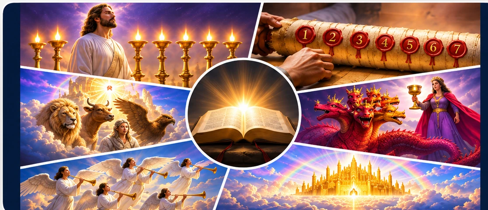

01
The pattern established
The earthly sanctuary illustrates God dwelling among His people, the daily priestly service and the annual Day of Atonement. Its rituals are types; Christ alone is the effective sacrifice and High Priest.

From the risen Saviour among the churches, through the heavenly sanctuary and final conflict, to the restoration of all things.

Revelation brings the story of the whole Bible to its climax. This new edition follows natural passages, explaining symbols in their biblical settings while keeping the message of the Lamb, His sanctuary ministry, judgment, salvation and restoration together.
Reading: Select a passage title to open the KJV text. The Scripture connection buttons open additional passages.
Daniel and Revelation portray historical fulfilment through the Christian era, with parallel and recapitulating visions; symbols are explained by Scripture and the sanctuary ministry supplies the unified setting. Historical dates such as AD 538, 1798 and 1844 are explained through the biblical calculations and history. Proposed chiastic structures are tested by the passage, not imposed.
The earthly sanctuary, Christ’s sacrifice, His heavenly ministry, the 1844 judgment, the final gospel message and God’s restored dwelling form a connected biblical story. The timeline is explained here once, then referred to throughout the study.
The earthly sanctuary illustrates God dwelling among His people, the daily priestly service and the annual Day of Atonement. Its rituals are types; Christ alone is the effective sacrifice and High Priest.
Jesus’ once-for-all sacrifice and heavenly ministry begin the New Testament sanctuary perspective. Revelation never replaces the Lamb with a calculation.
The 42 months, 1,260 days and time–times–half a time are understood within the historicist interpretation as the same period of 1,260 prophetic years, traditionally AD 538–1798. These historical dates are applications of the symbols, not dates stated in Revelation.
The prophetic chronology begins in 457 BC with the decree relating to Jerusalem and reaches AD 1844. The 70 weeks of Daniel 9 are understood as the first 490 years of the larger period. These dates come from Daniel and history, not a numerical statement in Revelation.
The Advent awakening expected Christ’s return. The bitter little-book experience is read as the disappointment of 22 October 1844; study of the heavenly sanctuary redirected attention from an earthly cleansing to Christ’s heavenly work.
Christ entered the antitypical Most Holy Place phase of ministry in 1844, commencing a pre-Advent investigative judgment. This does not mean He was inactive as High Priest before 1844, nor that His sacrifice was incomplete.
The everlasting gospel, Creator worship, commandments of God and faith of Jesus characterize the final invitation. This understanding of the Sabbath/mark conflict is a prophetic interpretation that is not a license to judge individual conscience.
A final settling of human choices precedes the seven last plagues. The text shows judgment advancing, while Revelation 22:11 articulates the irreversible condition.
Christ returns, rescues His people, and brings the controversy to an open and righteous conclusion. The millennium is followed by final judgment and the end of death.
The temple symbol culminates in immediate fellowship with God and the Lamb. The sanctuary timeline leads ultimately to restored relationship rather than continuing ritual.
John writes to seven actual churches of Roman Asia while drawing the whole Christian age into view. The glorified Christ ministers among the lampstands: the historical sequence of the book begins with His church on earth but is governed by His ministry in heaven. Daniel 7:13–14 and 10:5–6 supply imagery for the Son of man, whose resurrection and authority ground all subsequent prophecy.
Historical, prophetic and biblical context. The book begins by revealing Christ as Lord of history and present High Priest among the churches. The lampstands recall sanctuary furniture, yet John is not asked to map every detail to an earthly calendar. Daniel 7:13–14 and 10:5–6 provide the closest visual conversation: both prophets are reassured that God rules despite suffering.

Revelation is given through Jesus Christ and calls readers to hear and keep the testimony, not merely to decode symbols.

The opening blessing joins hearing to obedience: a reader may correctly identify empires and still miss the purpose of the prophecy. John presents an unveiled message transmitted from God through Christ for servants living under pressure. Its urgency is pastoral, not a licence to choose a date for the Advent. Compare Daniel's sealing of the vision with Revelation's instruction not to seal the book at its close.
The first promise of Revelation is a blessing for those who read, hear and keep its message. Prophecy is therefore not chiefly a puzzle to solve but an invitation to trust the One who reveals it. As the book unfolds, ask not only what an image means, but what loyalty to Jesus requires in the circumstances it describes.

The risen Lord addresses real congregations and declares Himself the beginning and end of history.

Grace and peace come from the eternal God, the seven Spirits before the throne, and Jesus Christ—the faithful witness, firstborn from the dead and ruler of earth's kings. His blood has freed His people and made them a kingdom of priests. The coming with clouds echoes Daniel 7; the whole world will confront the One once pierced. The churches receive comfort before any symbolic warnings begin.
The churches first receive grace and peace before receiving correction. That order matters: Christ confronts error because He has loved and redeemed His people. His promise to come again invites a response of gratitude and readiness, not fear-driven speculation.

John suffers exile, yet in worship sees Jesus among seven lampstands: Christ is present with His churches.

The description of the Son of man uses imagery already familiar from Daniel 7 and 10: shining glory, penetrating vision and authority that human rulers cannot imitate. John falls as one dead, but Jesus touches him and speaks comfort. The vision therefore introduces prophecy through reassurance. Whatever John later sees of beasts, war and judgment, the resurrected Lord already stands within the churches and knows their experience.
John's exile on Patmos places the vision inside real persecution. On the Lord's day—the seventh-day Sabbath established at Creation—he receives the revelation of Christ (Genesis 2:1–3; Exodus 20:8–11; Mark 2:27–28). Revelation later calls the world to worship the Creator (Revelation 14:7). The Son of man walks among seven golden lampstands, an image drawn from the sanctuary and identified in Revelation 1:20 as the churches. His robe and golden girdle reveal royal and priestly dignity; His eyes, voice and shining face recall Daniel's visions. Jesus is present among His congregations and holds the keys of death and the grave (Revelation 1:17–18).
John's exile does not interrupt Christ's presence. On the Lord's day he hears a voice that redirects his attention from the imperial power capable of imprisoning him to the One who walks among the lampstands. The great controversy is personal here: a faithful witness may lose freedom without losing communion with God. The same Christ who spoke to John now addresses the churches through the written word. The proper response is to listen, worship and serve in adversity rather than measure God's nearness by outward success. His authority over death gives courage to believers facing exile and persecution.

The One who died now lives forever and holds the keys of death and the grave.

The terrified apostle receives a touch and the command not to fear. The living Christ's victory over death supplies the key to understanding subsequent judgments; He is neither distant nor overcome by earthly violence. Stars are identified as the angels of the churches, and the lampstands as the churches themselves. Where Scripture identifies the symbol, no elaborate alternative should be imported.
The first word of the risen Jesus to a frightened disciple is reassurance. The One who holds the keys of death and the grave can be trusted with the future of His people. No earthly authority has the final word over a life committed to Him.
Ephesus, Smyrna, Pergamos and Thyatira are first-century congregations with distinctive local conditions. In the historical progression they also depict successive phases—apostolic faith and waning love; persecution under imperial Rome; accommodation after imperial favour; and the long medieval struggle over teaching and worship. The letters are not a mechanical substitute for the facts of church history: Jesus identifies the spiritual condition each successive period must confront.
Historical, prophetic and biblical context. These are genuine first-century congregations, and their appeals also expose recurring conditions across Christian history. Across the historical sequence, the seven churches portray successive broad eras of the church; the sequence is an interpretation of the letters as a whole, not a dated claim stated inside each letter. Each appeal ends personally: hear what the Spirit says.

Christ praises discernment but calls His people to recover the love and first works that should accompany truth.

Ephesus has defended the truth yet has left its first love. Christ does not set sound doctrine against love; He insists that the two belong together. Its historical setting is a concrete Christian congregation, while its place at the opening of a seven-church sequence has encouraged readers to recognize the first-century apostolic church. The symbolic extension should deepen the direct lesson, never replace it.
Ephesus worked, endured and rejected false apostles, yet its lampstand was in danger because love had waned. Holding correct doctrine does not cancel the call to repentance, nor does affection make testing teachers unnecessary. Applied historically, the message suits the apostolic church; its first audience was nevertheless the community of Ephesus. The tree of life promises that what was lost in Eden is restored through Christ.
In the historical progression of the seven churches, Ephesus represents the apostolic witness of approximately AD 31–100. The period provides a setting for the warning, but every congregation must still hear Christ’s summons to love.
Ephesus can test false claims and yet lose its first love. This warns the reader that accurate prophecy and doctrinal discernment are not themselves the goal of Christian life. Christ calls the church to remember, repent and return to its first works. Its lampstand represents a witness that exists to give light, not to display its own knowledge. Sound historical identification must therefore deepen love for Jesus and other people; otherwise the prophecy has been studied without hearing the voice of the One speaking.

The church facing suffering is promised the crown of life and victory over the second death.

Smyrna is materially poor but rich before God. The ten days of trial point to the intense Roman persecution from AD 303 to 313 under Diocletian and his successors. Christ calls His people to faithfulness even in suffering. The command is fidelity even when obedience is costly. The crown of life and protection from the second death direct attention beyond what persecutors can do to the final resurrection hope.
Smyrna represents the church from approximately AD 100–313, when believers faced recurring Roman persecution. Its association with myrrh reinforces the letter’s imagery of suffering and life beyond death.
Smyrna receives no promise that suffering will never occur. Instead the risen Christ declares Himself alive for evermore and commands faithfulness unto death. The crown of life is not a reward for obtaining worldly power but the gift of the One who conquered the grave. In history the church survived not through the triumph of coercion but through patient witness. Readers facing misunderstanding or loss may hold fast because the second death cannot overthrow a life hidden in Christ.

The sharp sword of Christ’s word exposes a mixture of fidelity and false teaching.

Pergamos represents the church period from AD 313 to 538, when Christianity moved from persecution into imperial favour. Under Constantine and the emperors who followed him, the danger shifted toward worldly honour, political influence and the introduction of pagan practices into Christian worship. Satan’s throne describes the ambition to elevate human authority over the Word of God (Isaiah 14:12–14; 2 Thessalonians 2:3–4).
The teaching of Balaam recalls compromise for advantage and the temptation to mingle true worship with idolatry (Numbers 22–25). Christ calls the church to repent and promises hidden manna, a white stone and a new name to those who overcome. The black horse of the third seal follows this same period of spiritual compromise and reduced gospel clarity.
Christ's sword is His truthful word, not permission for believers to wield coercion. When loyalty to Him carries a social cost, refuse both compromise and contempt. The hidden manna recalls His ability to sustain a conscience that will not bargain away worship; the new name points to the personal acceptance that comes from Him, not from public approval.

The Son of God searches hearts, contrasting repentance with teaching that excuses unfaithfulness.

Thyatira represents the church period from AD 538 to 1517, during the medieval age of papal dominance and widespread restriction of biblical truth. The woman Jezebel recalls Ahab’s court, where false worship was joined to religious authority (1 Kings 16:30–33; 21:25–26). In the prophetic church this portrays teachings that drew worship away from God’s Word and obscured Christ’s saving work. This period falls within the 1,260 years of Daniel 7:25 and Revelation 12:6.
Christ also recognises the love, service, patience and faith of those who remain devoted to Him. He calls the church to repentance because He searches hearts and desires to restore His people, not abandon them.
Christ sees what a congregation may prefer to overlook. Love is not indifference to teaching or behaviour that injures people and draws them away from Him. Faithfulness includes a willingness to repent and to protect the vulnerable without adopting the coercive methods of the powers Revelation condemns.

Christ calls the faithful remnant to persevere and promises a share in His coming kingdom.

Not everyone in Thyatira follows the condemned teaching. Christ does not impose another burden on the faithful except to hold what they have until He comes. The promised authority over the nations must be read through Psalm 2 and the Messiah's reign, not as permission for the church to seize coercive civil power. John Wycliffe, whose work helped prepare the Reformation by turning attention toward Christ and Scripture, became known as its morning star. The promised morning star is ultimately Christ Himself (Revelation 22:16).
Christ asks those who resist corrupt teaching to hold fast to what they have received. Faithfulness need not become a frantic search for new burdens: remain close to Him, refuse the attractions of compromise and trust His promise to return.
Sardis portrays formal religion following the Reformers’ recovery of Scripture; Philadelphia is associated with the great Advent awakening and the opening of the heavenly sanctuary ministry; Laodicea depicts the final church called to repentance during the judgment hour. Daniel 8–9 establishes the prophetic calculation culminating in 1844; the letter to Philadelphia supplies the fitting picture of Christ opening a door, not the date itself.
Historical, prophetic and biblical context. The open door and heavenly authority must be compared with Revelation 4–5 and the sanctuary ministry unfolded in Daniel 8:14 and Hebrews 8–9. The historical sequence associates Philadelphia with the awakening preceding 1844 and Laodicea with the judgment-era church. The text also challenges every believer now to respond to the living Christ, not merely to identify an era.

A name for life can conceal spiritual death; watchfulness and repentance are necessary.

Sardis represents the Reformation and post-Reformation church from AD 1517 to 1798. The recovery of Scripture during the Reformation brought new life, yet later churches could retain the name and outward forms of reform while losing the inward power of faith. Christ calls His people to remember what they received, hold it fast, repent and strengthen what remains.
The promise of white raiment and a name retained in the book of life directs hope to Christ’s righteousness. His Spirit, not institutional reputation, gives life to the church (Isaiah 11:1–3; Revelation 3:4–5).
A respected history or an impressive name cannot substitute for present spiritual life. The call to wake up invites a church to test its habits by the word of Christ, seek the Holy Spirit and strengthen whatever is still true and good.

Philadelphia has little strength but has kept Christ’s word. The Lord who holds the key of David sets before His people a door no earthly power can shut.

Philadelphia represents the period from AD 1798 to 1844, a time of revived study of Daniel and the great Advent awakening. Christ holds the key of David (Isaiah 22:22) and opens a door that no one can shut. His people are invited to follow Him by faith into a fuller knowledge of the heavenly sanctuary and His priestly ministry (Hebrews 8–9).
The prophetic 2,300 years ended in 1844 (Daniel 8:14). Christ then entered the final phase of His heavenly sanctuary ministry, rather than returning to cleanse the earth by fire as the Advent believers had expected. Their disappointment led to renewed study of the open door and the Most Holy Place. Mercy to the world did not end: Jesus continued to minister as the living High Priest. The promised pillar in God’s temple and the name of the New Jerusalem assure the faithful of their place with Him.
A church with little strength can remain faithful because Jesus opens what no person can close. His promises call for patient trust, faithful witness and a willingness to follow growing biblical light. No institution can take the place of the Saviour who welcomes repentant people to His throne of grace.
In the Adventist understanding, the open door directs attention to Christ’s heavenly ministry and the judgment associated with Daniel 8:14. The door is not an invitation to fear but to approach the living High Priest while mercy is offered. Compare the distinction between sanctuary inauguration and cleansing in Daniel 8. (Revelation 3:7–8; Daniel 8:14; Hebrews 4:14–16)

Christ’s counsel to buy gold, white raiment and eye salve reveals the poverty behind outward confidence.

Laodicea has confused material well-being and spiritual strength. The gold, white garments and eye salve are not commodities bought with money but gifts of Christ: genuine faith and love, His righteousness, and spiritual discernment. The promise is not merely that a church will learn its historical era; it is that repentant individuals will share the overcoming life of their Saviour.
Laodicea represents the final church period, from 1844 to the end of time. Its name points to a people living in the judgment-hour message. Christ exposes the danger of spiritual self-satisfaction: those who say they are rich may actually be poor, blind and naked because they trust in their own works rather than His saving grace.
Christ counsels His people to receive gold tried in the fire—faith and love—white raiment, His righteousness, and eye salve, the spiritual discernment of the Holy Spirit (1 Peter 1:7; Revelation 3:18). His appeal is not condemnation without hope but a loving invitation to repentance, revival and a deeper fellowship with Him.
Laodicea's danger is not only a mistaken idea about its historical place in the prophetic sequence. It is the confident assumption of spiritual wealth while lacking the righteousness, sight and purity that Christ alone supplies. His counsel to buy gold, white raiment and eyesalve calls for faith working by love, His covering righteousness and discernment through the Spirit. The One who rebukes also stands at the door and knocks. The final church is invited to intimate fellowship, not mere expertise in the last events.
Laodicea’s blindness illustrates the danger of assuming that knowledge or religious identity guarantees spiritual readiness. Christ’s rebuke is an expression of love, and His invitation to open the door calls for a personal response. Like Judas, we may receive repeated appeals without surrendering; unlike Judas, we can choose to respond now. (Revelation 3:17–20; John 13:1–30)

Christ’s rebuke is an expression of love; fellowship and overcoming are offered to those who respond.

Christ rebukes because He loves. The image of the Saviour standing outside the door exposes the possibility that a religious community can be busy while excluding the Lord it professes to serve. His invitation is personal fellowship, followed by a promise of sharing His throne by grace. Even the solemn final church is addressed in hope.
The rebuke of Laodicea comes from the One who loves enough to correct and waits at the door. The response is neither self-justification nor despair: repent, open to Christ, and share fellowship with Him. A church may be rich in activity while poor in dependence; genuine revival begins with hearing His voice and allowing Him to reshape daily conduct.
Before the seals unfold, John sees the throne of the Creator and the worship of heaven. The throne-room vision answers the question raised by persecuted churches: who governs the unfolding history? Its imagery resonates with Ezekiel 1 and Isaiah 6. This scene is the heavenly point of reference for the seals, trumpets, judgment and final restoration, rather than a separate earthly chronological period.
Historical, prophetic and biblical context. Heavenly worship places the Creator at the centre before John sees judgment and conflict. The lamp-like flames, living creatures and heavenly court echo Exodus 25–40, Isaiah 6 and Ezekiel 1. The source of authority is God’s character and creative power; the throne is not an accessory to prophetic calculation.

John is called from earthly pressures to the throne of the sovereign God.

John is brought before heaven’s throne before being shown the greater unfolding of the seals. This ordering is pastoral: the world is not ultimately controlled by persecutors or empires. The opened door directs attention to a real heavenly court, and the throne imagery resonates with Isaiah’s call, Ezekiel’s chariot vision and the sanctuary furnishings. What happens on earth must be interpreted beneath God’s sovereignty.
The seven lamps before the throne place this vision in the heavenly sanctuary’s Holy Place, where Christ ministers for His people. The earthly sanctuary set the lampstand on the south side and the table of showbread on the north (Exodus 26:35). The twelve loaves represented Israel before God, and the showbread was renewed on the Sabbath (Leviticus 24:5–8). Mount Zion, the city of the great King, is associated with the sides of the north (Psalm 48:2); the throne scene therefore unites the Creator’s government, His people and His Sabbath. This sanctuary setting prepares for the seven seals, which revisit the same historical periods as the seven churches, while the church’s hope rests in the ministry of its heavenly High Priest (Hebrews 8:1–2). The Sabbath connection anticipates the call to worship the Creator in Revelation 14:7.
The throne comes before the seals, trumpets and beasts because John must first see who rules the universe. Political empires are temporary, but the Creator is worshipped for bringing all things into existence. History cannot be understood by looking at persecution and power alone. The sanctuary vision teaches confidence in God's character while earthly institutions change. Prayer and reverent worship are therefore part of prophetic understanding: the reader joins heaven in acknowledging the rightful Sovereign.

Elders, lamps and the sea of glass frame an ordered, worshipful heavenly assembly.

Twenty-four elders sit upon thrones around the throne of God, clothed in white raiment and wearing crowns of victory. They represent redeemed humanity in heaven, the firstfruits brought with Christ at His ascension (Matthew 27:52–53; Ephesians 4:8). Their crowns, white robes and thrones fulfil the promises made to the overcomers among the seven churches (Revelation 2:10; 3:5, 21). Their song praises the Lamb who redeemed them by His blood from every kindred, tongue, people and nation (Revelation 5:9–10). The number twenty-four recalls the twelve tribes of Israel and the twelve apostles, encompassing the redeemed people of God (Revelation 21:12, 14). The seven burning lamps before the throne are the seven Spirits of God, and the sea of glass completes the glorious heavenly sanctuary scene.
Heaven’s elders lay their crowns before the Creator. Every responsibility or honour entrusted to us is therefore an opportunity for gratitude rather than self-importance. Reverence grows when we remember that God gives life and sustains it.

The living creatures and elders worship the Creator, giving the theological ground for true worship.

The four living creatures draw on Ezekiel's throne imagery and Isaiah's song of holiness. Their unceasing worship names God as the One who was, is and is to come, while the elders confess that all things exist by His will. This Creator-centred scene prepares for the first angel's summons to worship the Creator and exposes the false worship demanded by the beasts.
The creatures and elders honour God as Creator, not because He demands forced allegiance but because life itself is His gift. Worship puts human power and ambition in their proper place. This praise prepares the reader to recognise the contrast between the Creator and the powers that later demand worship for themselves.
The Lamb alone is worthy to open the sealed scroll. The lion-and-Lamb pairing supplies the centre of the whole book: divine victory is accomplished by Christ’s sacrifice. The successive seals are read as developments in the Christian dispensation under the authority of the slain and risen Redeemer. The historical reading begins not with Rome or the medieval world but with the One who rules their history.
Historical, prophetic and biblical context. Christ’s sacrifice gives Him the right to disclose and resolve the history represented by the scroll. His victory is achieved by becoming the Lamb. The hymn of redemption anticipates the final worship conflict: loyalty is due the Creator and Redeemer rather than any beast or empire.

No creature can open the scroll; creation cannot resolve its crisis by its own wisdom.

The seven-sealed scroll in the Father’s hand is the title deed to the earth, containing the history and destiny of its inhabitants. It is written on both sides, showing the fullness of what is recorded. Jeremiah 32:9–11 describes sealed title deeds, while Ezekiel 2:9–10 shows a scroll written within and without. Through sin humanity came under the sentence of death (Romans 3:23; 6:23), and Satan claimed dominion over the fallen world (Job 1:6–7). John weeps because no created being can undo that ruin or reclaim the inheritance. Only the Redeemer can open the scroll and change humanity’s destiny.
The scroll can be opened only through the Lamb’s redeeming victory. His worthiness reveals that the unfolding judgments and the hope of the nations depend upon the crucified and risen Christ, not upon the success of any earthly ruler (Revelation 5:9–10).
John’s tears give way to hope only when the Lamb is revealed. The future is not secured by human strength, superior information or political control; its meaning rests in Christ’s sacrifice and victory. When history seems closed and frightening, faith directs attention to the One worthy to open it.

Victory comes through the crucified Christ, who alone is worthy to take the scroll.

John hears of the Lion of Judah, yet sees a Lamb bearing the marks of slaughter. The surprise is the meaning of victory in Revelation: the Messiah prevails through sacrificial redemption. The scroll is received by One who is both powerful and faithful to the character of God. All subsequent judgments must be read in the light of this Lamb, not as a separate story about a cruel deity.
The Lion of the tribe of Judah appears as the Lamb who was slain: Christ has the right to open the title deed to the world because He has redeemed humanity by His own sacrifice. The scroll unfolds a love story of the Bride lost through sin and reclaimed by the Redeemer. His seven horns speak of perfect power, His seven eyes of complete discernment, and the seven Spirits sent into the earth point to the Holy Spirit carrying forward Christ’s victorious work, including the outpouring at Pentecost. The Lamb does not save by establishing an earthly empire; through His death and resurrection He reclaims His people and makes them kings and priests (Revelation 5:9–10).
John hears of the Lion of Judah but sees a Lamb as slain. Heaven's answer to the problem of the sealed scroll is not a more violent earthly empire; it is the sacrifice and resurrection of Jesus. His worthiness derives from a victory in which justice and self-giving love meet. The scroll can be opened because the Redeemer has entered the conflict and overcome. Every historical development in the following visions must be interpreted in the light of that Lamb, so the reader neither admires persecuting power nor loses hope when the faithful appear weak.
The Lamb who was slain is worthy because of His redeeming work. The ascended Christ ministers in the true tabernacle. The outpouring at Pentecost is connected in Acts of the Apostles, pp. 38–39, with the completion of His heavenly inauguration. The gift of the Spirit points us to a living Saviour, not merely a past event. (Revelation 5:9–12; Hebrews 8:1–2; Acts 2:1–4, 33)

Heaven praises the Lamb for redeeming a people from every nation by His blood.

The elders' harps and bowls of incense are linked to the prayers of the saints. Worship is not an escape from earthly suffering; heaven receives the petitions of those who trust the Lamb. The new song celebrates redemption from every people, language and nation, making ethnicity or political power no basis for belonging to the kingdom.
The prayers of the saints rise before the Lamb whose sacrifice makes access to God possible. Prayer is therefore neither a ceremony to earn attention nor a substitute for service. Bring specific needs to Christ, and live as a priestly people by bearing witness to His mercy and caring for those who cannot repay you.

The widening chorus unites worship of the Father and the Lamb.

The circle of worship widens from throne attendants to myriads of angels and every creature. Honour is given to the One seated on the throne and to the Lamb together. Revelation's ultimate concern is the vindication of God's character and the restoration of willing worship. This universal chorus anticipates the final world in which God's rule is openly acknowledged.
Heaven’s worship is centred on the Lamb who was slain. True praise grows from gratitude for His self-giving love, not from pressure or display. The final harmony of creation begins with a heart willing to honour Jesus now.
The seals trace changing conditions as the Christian message spreads, meets persecution, suffers compromise and passes through spiritual darkness. The fifth seal centres the cries of martyrs, and the sixth moves toward the last judgment with signs historically associated in Adventist exposition with the Lisbon earthquake (1755), the dark day (1780) and the falling stars (1833). The question “who shall be able to stand?” directs the reader immediately to chapter 7.
Historical, prophetic and biblical context. The prophetic sequence connects the seals through the church’s experience: early gospel victory, persecution, compromised religion, spiritual death, martyrs’ plea and signs attending the nearing judgment. The vision places the cry “Who shall be able to stand?” at the threshold of chapter 7 and answers it with the sealing and redemption of God’s people.

The rider on the white horse begins the sequence with the victorious advance of the gospel in the early church.

The first white-horse rider represents Jesus Christ leading the victorious proclamation of His gospel through His people (Revelation 19:11–16). The white horse portrays the purity and power of the apostolic witness, corresponding to Ephesus, AD 31–100. The bow depicts Christ’s conquest of sin through the love revealed at the cross, and the crown declares His victory. Habakkuk 3:9 provides a further biblical connection between the bow and God's Word, declaring, “Thy bow was made quite naked, according to the oaths of the tribes, even thy word.” The bow therefore also illustrates the power of God's Word in the proclamation of the gospel. Its arrows of divine truth and love reach the conscience, convict hearts of sin, and draw people to repentance and victory through Christ (John 12:32; Romans 1:16). From Pentecost onward the church carried this message outward, inviting people to be delivered from sin and death. The horse and rider must therefore be understood through the Lamb who has just reclaimed the title deed to the earth, not as an unidentified earthly conqueror.
The imagery also recalls Zechariah, where the Lord uses Judah as His bow and Ephraim in His work of deliverance (Zechariah 9:13–14). In Zechariah 10:3, He makes His people of Judah like His goodly horse in battle. These pictures help explain how the victorious Rider may be understood as Christ working through His people. In the gospel, the conquest is accomplished through the truth of His Word and the power of His sacrifice, not by compelling the conscience (Revelation 12:11).
In this prophetic sequence, the first horse depicts the gospel's early forward movement following Christ's ascension. White corresponds naturally with the purity of the testimony entrusted to the apostles; a bow, crown and victorious riding convey expansion rather than a merely local episode. The apostolic church moved outward from Jerusalem into the Roman provinces and beyond under persecution (Acts 1:8; 8:4; 17:6; Colossians 1:23). The vision's imagery is not a record of a named Roman campaign, so the historical identification is established by the sequence of church history and the change represented by the following horses. Revelation's opening letters first examine the church's fidelity; the seals now show conditions through which the witness travels.
The four horses depict the movement of the gospel and the different responses to it across the earth. Their sequence also parallels the four soils in Christ’s parable (Matthew 13:1–23), beginning with the pure gospel bearing fruit and proceeding through persecution and compromise. The white horse is Christ’s victorious gospel witness through His people; He conquers by truth, self-giving love and the power of His sacrifice (Revelation 12:11).
The first rider introduces conquest, but the churches must measure every claim of victory against Christ’s own character. Gospel witness cannot be defined by military success, prestige or compulsion. The Lamb conquers through truth and sacrificial love.

The red horse shows conflict and bloodshed, a sober counterpoint to the gospel’s promise of peace.

The red horse represents the persecution that followed the apostolic church, the period of Smyrna from approximately AD 100–313. Peace is removed as hostility toward the gospel becomes violence against those who follow Christ. The sword of the rider portrays the coercion and bloodshed that marked this age, culminating in the severe persecution under Diocletian and his successors. Yet the church’s witness was not overcome: Christ promised the faithful of Smyrna the crown of life and victory over the second death (Revelation 2:8–11).
The red horse marks a dramatic loss of peace. Under the Roman emperors, Christians experienced periods of hostility, local denunciation and organised persecution. Imperial persecution did not proceed without interruption or in one uniform form: the measures of Decius in AD 250 and Diocletian from AD 303 were distinct episodes. The sword identifies a world in which coercive power was turned against the church. This period corresponds to Smyrna, and its suffering links the second seal with the martyrs heard under the fifth seal (Revelation 6:9–11).
The peace that persecution takes away is contrasted with the peace Jesus gives His disciples, which does not depend on favourable outward circumstances (John 14:27). The great sword of the red horse represents the violence directed against believers; the sword entrusted to Christ’s followers is the sword of the Spirit, the Word of God (Ephesians 6:17). The church therefore meets persecution with faith and testimony rather than religious coercion.
The red horse corresponds to the church of Smyrna, approximately AD 100–313. In the parable-of-the-soils comparison, hardship tests whether the received Word has deep roots (Matthew 13:20–21).
The loss of peace shows the terrible consequences of hatred and conflict. Disciples of Jesus are called to resist the temptation to answer fear with violence, to persevere under pressure and to remain peacemakers even when surrounding society is divided.

The black horse, balances and costly food portray spiritual and social deprivation.

The black horse bears a balance and is accompanied by costly measures of wheat and barley. The image portrays scarcity, and the prophetic sequence also shows the increasing scarcity of uncorrupted spiritual nourishment as Christianity became entangled with imperial favour. The third seal corresponds with Pergamos, approximately AD 313–538, when legal protection for Christianity under Constantine in AD 313 was followed by civil Sunday-rest legislation in AD 321. These are historical markers of a developing compromise, not dates written into the seal itself (Revelation 2:12–17).
The balances also portray an oppressive yoke of religious bondage in contrast with the liberty Christ gives (Acts 15:10; Galatians 5:1). Wheat and barley point to the bread of life and the Word of God (John 6:35; Amos 8:11). Yet the oil and wine are not to be harmed: the Holy Spirit's anointing and the saving blood of Christ remain available even in an age of darkness (1 John 2:20; Mark 14:23–25). The gospel cannot be extinguished by the failure of those who claim its authority.
Scarcity can expose what people value and whom they overlook. The gospel calls for fairness and care toward those burdened by want, while warning against allowing wealth and anxiety to choke trust in God.

The pale horse and its rider make the destructive consequences of sin unmistakable.

The pale horse is named Death, and the grave follows. Sword, hunger, death and beasts show the destruction produced as power displaces the truth and freedom of Christ's gospel. The ordered progression from white to red, black and pale portrays a decline from gospel proclamation through persecution and compromise to spiritual and physical oppression (Revelation 6:1–8).
The fourth seal corresponds broadly to the medieval period, AD 538–1517, when religious and civil power were closely joined and many faithful believers suffered persecution. The historical system developed over centuries rather than appearing fully formed in a single year. The next seal gives voice to the martyrs' appeal for justice; Christ has not forgotten those who were faithful even unto death (Revelation 6:9–11).
The fourth seal portrays the deadly reach of evil, yet it does not surrender the future to death. Christ’s promise of resurrection prevents His people from treating suffering as meaningless or using fear as a tool to secure religious loyalty.

The symbolic cry beneath the altar assures the suffering faithful that God has not forgotten injustice.

The souls under the altar are a symbolic depiction of the appeal for vindication, much as Abel’s blood cried from the ground. The scene is not designed to settle the nature of the soul after death; its immediate purpose is to assure persecuted believers that God remembers their suffering. The white robes and instruction to rest place vindication in God’s hands rather than inviting retaliation.
Souls under the altar cry for justice and receive white robes while told to rest. The symbolic language recalls Abel's blood crying from the ground, rather than functioning by itself as a proof of conscious souls speaking in death. The passage promises that suffering has not escaped God's notice. Vindication belongs to Him, not to retaliation by His followers. The historic period of persecution includes the medieval centuries associated with the 1,260 years of Daniel 7, but the altar image does not imply that the dead are consciously administering judgment. Like Abel’s blood crying from the ground, the martyrs’ appeal signifies a wrong God will finally put right (Genesis 4:10).
John sees souls beneath the altar, a sanctuary image that makes their appeal for justice visible. Genesis 4:10 says Abel's blood cries from the ground: the point is that violence is not forgotten by God, not that the dead independently administer the heavenly judgment. The white robes and instruction to rest preserve both vindication and an unfinished history of witness. The Reformation recovered important biblical truths and confronted some abuses, but persecution and suffering continued after its beginnings. Connect the martyrs' appeal to the altar of Revelation 8:3–5, where prayers rise before the trumpets, and to Daniel 7, where the court ultimately judges the persecuting power.
The cry from beneath the altar expresses the longing of the persecuted for justice; it is not permission for believers to avenge themselves. The white robes point to Christ's righteousness and His acknowledgment of those whose testimony cost them their lives. The apparent delay in judgment does not mean that their blood has been forgotten. The fifth seal prepares the question of the sixth: who can stand? The answer comes through the Lamb and His sealing work, not through human retaliation.

The sixth seal turns the focus toward disturbances associated with the coming day of the Lord. The historical applications associate a great earthquake, the dark day and the falling stars with notable eighteenth- and nineteenth-century signs. Those identifications depend on historical interpretation. The narrative’s unmistakable question is theological: who can stand when the Lamb’s judgment is revealed? Chapter 7 answers that question.

The sixth seal reveals the great signs preceding Christ’s return. The Lisbon earthquake of 1 November 1755, the darkening of the sun and moon on 19 May 1780, and the falling-stars display of 13 November 1833 mark the historical fulfilment of the seal’s early signs. They follow the centuries of persecution and anticipate the judgment-hour proclamation and Christ’s coming (Matthew 24:29–31).
John carries the vision forward to the heavens departing, the mountains and islands moving, and the overwhelming day of the Lamb’s return. The question ‘Who shall be able to stand?’ leads into Revelation 7, where God seals His servants and reveals the multitude standing before the throne and the Lamb.
The shaking of earthly certainties confronts every person with the question, “Who shall be able to stand?” The answer is not human status or courage but belonging to the Lamb. The warnings call us to seek His mercy while it is freely offered.
The sealing scene is a theological answer to the sixth seal, rather than a new empire replacing the last. God restrains the winds while His servants are sealed; Revelation 14 identifies the final people of God by faithfulness to the Lamb, God’s commandments and the faith of Jesus. Within the historical prophetic sequence, the seventh-day Sabbath becomes prominent as the Creator’s sign in the final worship controversy, without making outward conformity a substitute for inward loyalty.
Historical, prophetic and biblical context. The interlude answers the sixth seal’s question by presenting God’s sealed people and the international redeemed multitude. Compare Ezekiel 9:4, Exodus 31:13–17, Ephesians 1:13 and Revelation 14:1,12. The biblical connections relate the seal with God’s law and Sabbath allegiance; sealing must never be reduced to an outward mark detached from the Lamb’s character.

Heaven delays the release of destructive winds until God’s servants receive His seal.

The four winds are restrained until God’s people are sealed. Sealing signifies belonging, settled loyalty and identification with the living God. Comparing the creation memorial in Exodus 20 and 31 with the saints’ faith and commandments in Revelation 14, The Sabbath has a special part in the final allegiance question. It is Christ who seals His people; Sabbath observance without faith and His transforming grace is not an adequate definition of the seal.
The four winds are restrained before destructive forces fully break loose. The angel's commission to seal the servants of God places mercy before the last crisis. The seal marks belonging to God, not possession of a magical object. In this prophetic sequence the Sabbath expresses allegiance to the Creator within the last worship conflict, but the passage must be considered alongside Ezekiel 9 and Revelation 14.
The pause between the sixth and seventh seals answers the question, “Who shall be able to stand?” (Revelation 6:17). God restrains the four winds while His servants are sealed. Ezekiel 9:4–6 shows a distinguishing mark on those who grieve over evil; Revelation 14:1–5 shows God’s redeemed people standing with the Lamb. The Holy Spirit seals those who trust the gospel, writing God’s law in their hearts (Ephesians 1:13–14; Ezekiel 36:25–27). The seventh-day Sabbath is the sign of the Creator who sanctifies His people (Exodus 20:8–11; Ezekiel 20:12), not a substitute for the saving work of Christ.
The restraint of the winds reveals patience in the midst of judgment. God does not forget His servants while history is unsettled. The time granted for sealing calls for an inward, willing allegiance to Christ, shaped by His truth and character.
The restrained winds show that God provides opportunity before the final crisis. The seal is not merely an outward label; compare the Father’s name in Revelation 14:1 and the faithful life described in verse 12. The former rain prepares the heart; we should not expect the latter rain to replace neglected repentance, prayer or growth. (Revelation 7:1–3; 14:1, 12; Joel 2:23–29; Acts 3:19)
For further study: the presentation proposes that individual cases become settled, sins are blotted out, and sealing and the latter rain follow. Could these events be related progressively within the final judgment? Compare the sanctuary pattern with Acts 3:19 and Revelation 7. Does Scripture establish a fixed order, or describe related aspects of preparation? This is a possible interpretation, not an established chronology. (Leviticus 16; Acts 3:19; Joel 2:23–29; Revelation 7:1–3; 14:1–5)

Israel’s tribes are named symbolically in a vision of a people identified as belonging to God.

John hears 144,000 sealed servants described in the language of Israel's twelve tribes. The list differs from ordinary Old Testament genealogies, indicating the spiritual meaning of the covenant people whom God gathers and claims as His own. The descriptions of the redeemed in Revelation 7 and 14—belonging to God, following the Lamb, bearing His character and standing by His righteousness—are promises rooted in the saving work of Christ, not ethnic ancestry or human merit (Revelation 14:1–5; Ephesians 1:13–14).
God writes His law in the heart and sanctifies His people by His Spirit (Ezekiel 36:25–27; Hebrews 8:10). The Sabbath is the memorial of creation and the sign of the Lord who sanctifies (Exodus 20:8–11; Ezekiel 20:12). In the fourth commandment the divine seal identifies His name—the LORD—His title—the Creator—and His domain—heaven and earth (Exodus 20:10–11). This sign belongs within the gospel of resting in Christ for salvation (Hebrews 4:1–10); it stands against the counterfeit allegiance demanded by the beast (Revelation 13:16–17).
Those who belong to the Lamb are known by faith, truthfulness and a transformed life, rather than by a mere outward label.

John sees a multitude from every nation praising God and the Lamb.

John sees a great multitude from every nation, kindred, people and tongue standing before the throne and the Lamb. They wear the white robes of Christ's righteousness and praise God alone for their salvation. He has just heard the numbered tribes; now he sees the breadth of God's redeemed family. As with the Lion announced and the Lamb seen in Revelation 5, the scenes illuminate the redeemed from complementary angles. The vision offers hope to faithful people from every age and place who have trusted in Christ (Revelation 5:5–6; 7:4–14).
The great multitude includes all nations, kindreds, peoples and tongues, revealing the scope of Christ's redemption. Their white robes have been made white in the blood of the Lamb; salvation rests on His merits, not an ethnic or political achievement. The One on the throne shelters them, and the Lamb becomes their shepherd. The chapter therefore answers apocalyptic fear with intimate promises: hunger, thirst, scorching heat and tears will end. The sealing of the faithful has this final communion as its purpose.

Those who passed through great tribulation stand cleansed; God wipes away every tear.

Their robes are made white in the Lamb's blood—an apparent paradox that places Christ's sacrifice at the heart of purity. Hunger, thirst and scorching sun end because the Lamb is their shepherd. The promise that God wipes away tears points forward to Revelation 21; the future assurance equips believers for faithfulness in the present.
The Lamb shepherds people who have passed through suffering; their security rests in His blood and His presence, not in a claim that they never faced trouble. This promise encourages those grieving, persecuted or exhausted: God remembers tears that the world has overlooked. To follow the Lamb now is also to practise compassion toward the vulnerable.
The seventh seal opens into the altar and prayers of the saints; the trumpet series then depicts divine warnings that sound through the history of the Christian age. Classical Protestant historicism applies the first four trumpets to the breaking up of Western imperial Rome through successive invasions. Each trumpet harms a limited portion, foreshadowing—but not duplicating—the final seven last plagues. The altar shows that heavenly ministry and earthly judgments belong in the same story.
Historical, prophetic and biblical context. The trumpets are limited warnings and judgments while mediation and prayer remain in view. Their symbolism draws heavily from the Exodus plagues and prophetic pictures of national downfall. The detailed historical referents; the sanctuary altar and the prayers of saints are more certain anchors than speculative event matching.

The silence at the seventh seal is striking after six seals of motion and sound. The altar scene then raises the prayers of saints before the trumpet sequence. Rather than prematurely insisting that every trumpet follows chronologically from every detail in the seals, readers should notice John’s recapitulating visions and the ongoing heavenly context. The partial judgments function as alarms within a world where the prayers of God’s people matter.

The seventh seal completes the sequence that began with the question, “Who shall be able to stand?” (Revelation 6:17). Its silence in heaven for about half an hour points to the awesome moment of Christ’s Second Coming, when He leaves the heavenly dwelling to gather His redeemed people (Zephaniah 1:7; Zechariah 2:13; 1 Thessalonians 4:16–17). Revelation 7 has shown who will stand by the Lamb’s grace. The seven trumpets then begin a new prophetic cycle of alarms and warnings.
Before the trumpets sound, the prayers of believers ascend with incense: Christ presents the merit of His sacrifice with the prayers of His people (Revelation 8:3–4; Ephesians 5:2). The altar recalls the cross, while the golden altar belongs to the heavenly Holy Place ministry. Fire cast to earth represents the Holy Spirit poured out at Pentecost in answer to prayer (Acts 2:1–4). The voices, thunderings, lightnings and earthquake accompany God’s power, the proclamation in many languages and angelic ministry. This opening also looks forward to a fuller outpouring of the Spirit before Christ’s return; the trumpets sound warnings while mercy is still offered.
Before any trumpet sounds, the prayers of the saints rise with incense before God. This order matters: the warnings do not depict a universe abandoned by a remote deity, but a history in which Christ's heavenly ministry and the suffering prayers of His people are inseparable. Christians should neither rejoice at calamity nor treat prophetic judgments as entertainment. The appropriate response to the warnings is repentance, intercession and compassionate witness while mercy remains available.

Fire and hail portray a restricted judgment, with imagery echoing the plagues of Egypt.

Hail, fire, blood, trees and grass are symbols of judgment, conflict, leaders and people (Job 38:22–23; Daniel 4:20–22; Isaiah 40:7–8). The first trumpet points to the destruction of Jerusalem in AD 70 by the Romans under Titus, fulfilling the warning of Jesus concerning the city and its temple (Matthew 24:1–2; Luke 21:20–24).
Isaiah 28:2 provides another Old Testament example of hail and a destructive storm being used as imagery of divine judgment. Its original warning concerns Ephraim, but the prophetic language helps illuminate the hail of the first trumpet. The application to Jerusalem rests on Christ’s own warnings concerning the city (Matthew 24:1–2; Luke 21:20–24), rather than on identifying Isaiah’s historical setting with the events of AD 70.
The measured “third” announces a real but limited judgment, not the destruction of the whole world. Christ had warned Jerusalem with tears and called its people to hear Him. The warning belongs to the early Christian period and introduces the sequence of trumpet judgments that continues through later church history.
The first trumpet calls attention to the consequences of rejecting repeated warnings. Its historical symbols must not eclipse Christ’s grief for Jerusalem: God calls people to repentance before judgment, and His followers are to warn with compassion, never triumph over suffering.

A burning mountain and afflicted sea signal a further blow to earthly security.

The burning mountain cast into the sea portrays imperial Rome losing its unity among the nations. Mountains can symbolize ruling powers (Daniel 2:35; Jeremiah 51:25), and the waters signify peoples and nations (Revelation 17:15). The second trumpet moves from Jerusalem’s fall to the fragmentation of Rome and the consequences for the expanding Christian church.
The death of living creatures and the wreck of ships also point to spiritual losses among those who had received the gospel. When truth is compromised and faith makes shipwreck (Colossians 1:23; 1 Timothy 1:19), the outward spread of religion can conceal a deepening apostasy. The mystery of iniquity was already at work before its later union with earthly authority (2 Thessalonians 2:1–7).
What appears immovable can be cast down. The second trumpet warns against trusting in the permanence of earthly dominion; those who belong to Christ can serve faithfully without building their hope on empires or human strength.

Wormwood makes waters bitter; the picture associates judgment with poisoned sources of life.

The great star falling from heaven recalls Satan’s fall (Luke 10:18; Revelation 12:9). It burns “as it were a lamp,” imitating the light of God’s Word (Psalm 119:105; 2 Corinthians 11:14–15). Rivers signify channels of leadership and influence, while fountains are sources from which people drink. Wormwood makes those waters bitter: false teaching corrupts what should sustain spiritual life (Proverbs 25:26; John 4:14).
The connection with false spiritual instruction is particularly clear in Jeremiah 23:15, where the Lord speaks of feeding false prophets with wormwood and giving them bitter water because ungodliness has spread from them throughout the land. This background helps explain the third trumpet’s imagery: the sources that should nourish God’s people become harmful when their teachers depart from His truth. In contrast, the water Christ gives leads to everlasting life (John 4:14).
As the church became entangled with worldly power, the gospel was increasingly mixed with human traditions and deceptive claims to spiritual authority. The third trumpet exposes that corruption within professed Christianity. Its warning is not simply the fall of another military power, but the loss of living biblical truth among leaders and believers.
Bitter waters remind us that influences meant to sustain life can become sources of harm. Test spiritual teaching by Scripture and the character of Jesus, and seek the living water He offers rather than passing that bitterness to others.

The darkening heavenly lights is followed by a warning that greater woes are coming.

A third of the sun, moon and stars is darkened. The sun recalls Christ, the Sun of righteousness (Malachi 4:2); the moon reflects the light of divine truth, and the stars point to heavenly messengers and faithful witnesses (Daniel 12:3; 2 Peter 1:19). The repeated “third” shows an extensive yet limited obscuring of light.
During the long era of spiritual darkness, the saving work of Christ, the Scriptures and the witness of His people were obscured by claims to religious supremacy. Yet God preserved His Word and those who followed it. The eagle’s threefold woe warns that more severe judgments are coming, while the prophetic light remains available to those willing to receive it.
The dimmed lights and the eagle’s warning make spiritual darkness a matter of urgency. The proper response is not sensational fear but renewed attention to the light God has already given and a willingness to share it plainly.
The fifth and sixth trumpets trace the Islamic and Ottoman powers and the weakening of the eastern Roman world. The prophetic periods distinguish the two woes: the fifth trumpet’s 150 years lead into the sixth trumpet’s 391 years and 15 days, ending on 11 August 1840. These warnings unfold before the heavenly sanctuary transition of 1844. Revelation ends the chapter by showing that even serious warnings do not bring repentance when people remain attached to idolatry and sin.
The fifth and sixth trumpets direct attention to powers that arose over successive centuries, including the Arab and Ottoman advances against the eastern Roman world. The prophetic intervals are explained with their historical applications below. The repeated refusal to repent in Revelation 9:20–21 shows why the trumpets are warnings to seek God rather than merely a record of military events.

Smoke and tormenting locusts introduce the first woe; the vision uses layered apocalyptic imagery.

The fifth trumpet opens the abyss as smoke darkens the air and locust-like armies come forth. The biblical imagery presents the fallen star as Satan (Luke 10:18; Revelation 12:9), the key as authority (Revelation 3:7), the abyss as confusion and darkness (compare Genesis 1:2), the smoke as idolatrous obscuration (Hosea 13:2–3), and locusts as invading armed forces (Joel 1–2). The command not to harm those with God’s seal places boundaries on the judgment and keeps the protection of the faithful central. The biblical pictures describe a church in spiritual darkness that is exposed to a force which it cannot control.
Following the obscuring of the gospel in the medieval church, the fifth trumpet reveals the rise of Islamic military power and its pressure upon the Eastern Christian empire. The locust imagery draws on Joel 1–2, while the restraint upon harming God's sealed servants shows the limits of the judgment. Five prophetic months comprise 150 prophetic days, understood by the day–year principle as 150 years. The historical calculation runs from 27 July 1299 to 27 July 1449, leading into the sixth trumpet. These dates belong to the chronology of the prophecy; its spiritual appeal remains repentance, deliverance from idolatry, and trust in God's protection.
The smoke and torment of the fifth trumpet expose the destructive effects of deception. God’s people are called to discernment, dependence on Him and compassion for those caught in fear, never delighting in calamity.

Descriptions of locust riders communicate terror and bounded power, not permission for careless modern speculation.

The locusts appear like horses ready for battle, with armour, wings and stinging tails. The composite image describes the fearsome advance of Islamic military powers against the Eastern Christian empire, drawing on the invasion imagery of Joel 1–2. The first woe is a period of torment rather than immediate destruction; even the attackers operate within limits set by God.
The restraint concerning those who bear God’s seal recalls Revelation 7 and keeps His protection of the faithful in view. The five prophetic months and their 150-year calculation belong to the opening scene of this trumpet (Revelation 9:1–6); the symbols here develop the character and effect of the invading power.
The terrifying army illustrates how overwhelming the forces in a prophetic conflict may appear. Appearances of strength or splendour are not proof of divine approval. The believer’s safety lies in discerning truth and following the Lamb.

The second woe comes from the golden altar’s command; divine restraint has a stated limit.

The second woe is heard from the golden altar, within the heavenly Holy Place scene. Its place in the sanctuary sequence is significant: in the sanctuary chronology the end of the 2,300 years in 1844 begins Christ’s final Day-of-Atonement ministry; therefore the sixth-trumpet scene, in this historical sequence, belongs before that transition. The Euphrates recalls the downfall of ancient Babylon (Jeremiah 51:60–64), and the four angels embody a divinely limited release of judgment, compared with the restraining angels of Revelation 7:1. The appointed period is read under the day–year principle.
The sixth trumpet unfolds the Ottoman period of the second woe. The prophetic interval is a year (360 days), a month (30 days), a day (1 day) and an hour (1/24 of a day). Under the day–year principle these represent 360 years, 30 years, 1 year and 15 literal days—a total of 391 years and 15 days (Numbers 14:34; Ezekiel 4:6). From 27 July 1449 the calculation reaches 11 August 1840, following the fifth trumpet’s 150-year period from 27 July 1299 to 27 July 1449.
On 11 August 1840 the Ottoman government accepted the protection of European powers, fulfilling the predicted loss of independent power. The earlier public announcement of this date strengthened confidence in the prophetic periods and gave fresh impetus to the Advent awakening. The golden altar and the four restrained angels show that these historical warnings remain under divine oversight and belong before the sanctuary transition of 1844 (Revelation 9:13; 7:1; Daniel 8:14).
The sixth trumpet portrays power operating within limits set by God. Even when the prophetic chronology is difficult to assess, the lesson is clear: history is not outside His knowledge, and people must respond to the time given them with repentance and trust.

Even severe warning does not automatically turn humanity from idolatry and violence.

The chapter's concluding statement interprets its own moral meaning: survivors do not repent of idols, bloodshed, sorceries, immorality or theft. Prophetic accuracy is not a substitute for repentance. The tragedy is hardened worship that survives severe warnings but refuses the God who gives life.
The horses with fire, smoke and brimstone describe the terror of military judgment, a force interpreted in the trumpet sequence in connection with Islamic armies and the Ottoman world. Yet the inspired text ends not with a calendar but with its moral verdict: the survivors do not repent of idols, murder, sorcery, sexual sin or theft. The interval is therefore a warning that coercion and catastrophe by themselves do not produce conversion. The golden altar, like the rest of Revelation’s sanctuary furniture, points to Christ’s saving ministry while mercy is offered, before the final judicial phases that the book later reveals.
The closing verdict on unrepentance is more searching than the military imagery. Repeated warnings cannot soften a heart determined to keep its idols. Ask whether fear of consequences has changed only outward behaviour, or whether worship, honesty and regard for others have genuinely turned toward God. Mercy calls for a response while it can still be heard.
The opened little book deliberately reverses the sealing language of Daniel 12. The angel’s oath and the sweetness followed by bitterness are read by Seventh-day Adventists in relation to the completed long prophetic periods, the Millerite movement and the disappointment of 22 October 1844. The further command to prophesy leads to the renewed worldwide gospel proclamation of Revelation 14. The movement from disappointment to fresh understanding concerns Christ’s ministry in the heavenly sanctuary.
Historical, prophetic and biblical context. The open little book is most naturally compared with Daniel 12:4,9, whose prophetic vision was sealed until the time of the end. The prophetic sequence connects the sweet expectation, bitterness and renewed commission to the Millerite movement, disappointment of 22 October 1844 and the subsequent worldwide proclamation of Christ’s sanctuary ministry. “Time no longer” is not the end of ordinary chronological existence.

The angel’s authority spans land and sea, while some things remain deliberately sealed.

The mighty angel is Jesus Christ, appearing with the cloud, rainbow and authority of heaven, His feet spanning sea and land and a little book already open. Daniel had been commanded to seal the vision until the time of the end (Daniel 12:4, 9); the opened book is Daniel’s prophecy, especially the 2,300-day vision (Daniel 8:14). In Daniel 12 and Revelation 10 the heavenly figure raises His hand in an oath concerning prophetic time. The opening of the book leads to renewed worldwide proclamation after the disappointment (Revelation 10:11).
The seven thunders speak, but John is forbidden to write their message. Their unrecorded words must not be turned into a speculative timetable. The mighty angel’s imagery recalls heavenly authority, while Revelation places this interlude between the sixth trumpet and the seventh (Revelation 11:15). The purpose of opening the book is to understand Christ’s saving work and proclaim it, not simply to calculate a date; Daniel 9:24 locates the prophetic story in the Messiah’s work of bringing in everlasting righteousness.
The little book is opened so that the people of God may understand and bear witness, not so that every unknown detail can be guessed. The Advent movement’s history calls for humility: a correct prophetic period does not remove the need to examine carefully what Scripture says will happen.

The angel’s announcement that there is to be time no longer is understood in the prophetic sequence as the end of the long, dated prophetic periods, not the cancellation of all time. Daniel’s sealed end-time prophecy is now open for proclamation. The seventh trumpet points forward to the completion of God’s mystery. This is why the chapter belongs in a sanctuary-and-mission timeline rather than being reduced to a prediction of the world’s immediate destruction.

The angel swears by the Creator that there should be time no longer. Read with Daniel’s sealed visions, the oath signals the completion of the great dated prophetic periods, not the end of ordinary time or the immediate return of Christ. The 2,300 years reach 1844 from the decree of 457 BC (Daniel 8:14; 9:24–27). In that year Christ began the final phase of His heavenly sanctuary ministry; mercy did not close to the world.
The mystery of God proceeds toward completion at the seventh trumpet. That mystery includes Christ in His people, the hope of glory (Colossians 1:26–28), set against the mystery of iniquity (2 Thessalonians 2:3–7). Prophetic time therefore serves the gospel: the living High Priest continues His ministry, while the church continues to witness (Revelation 10:11; 11:15–19).
The oath directs the reader beyond calculations to the certainty of God’s purpose. Prophetic study should produce humility and patient obedience, not claims to know the day of Christ’s return. Our task is to follow the light already opened.

The opened book is sweet in John’s mouth but bitter in his belly. Prophecy becomes a message lived through hope, disappointment and renewed understanding.

Eating the book recalls Ezekiel 2:8–3:3 and Jeremiah 15:16, where receiving God’s word becomes the messenger’s personal experience. The prophecies sealed in Daniel were studied with increasing urgency after the time of the end. Their promise was sweet to believers expecting the visible return of Jesus.
The reckoning of the 2,300 prophetic days in Daniel 8–9 led to 1844. The believers’ expectation, however, was that the cleansing of the sanctuary meant Christ would return and cleanse the earth by fire. When He did not appear on 22 October 1844, their joyful anticipation became bitter disappointment. Their calculation of the period and their understanding of the event were two separate questions.
Further study of Leviticus 16 and Hebrews 8–9 opened the significance of the heavenly sanctuary. Christ had not failed to fulfil His promise: He was carrying forward His high-priestly work in its final phase. The vision does not suggest the disappointments were pleasant or that every conclusion the believers had reached was correct. It shows how the word of God led them through sorrow into further light.
Daniel 8:14 gives the 2,300 evenings and mornings; Daniel 9:21–23 resumes Gabriel’s instruction. In the Adventist historicist interpretation the seventy weeks are allotted from the longer period, sharing its starting point. Counting 2,300 years from 457 BC, with no year zero, reaches AD 1844. This is a theological reading of the relationship between the chapters, not a conclusion supplied by the video’s historical argument alone. Christ’s once-for-all sacrifice remains the foundation of His ongoing priestly ministry (Hebrews 8:1–2; 9:24–28).
Ezra 1:1–4 records Cyrus authorising the return and rebuilding of the temple (c. 538/537 BC). Darius I confirmed the earlier authorisation and provided resources (Ezra 6:1–12; c. 520 BC); the temple was finished in his sixth year. Artaxerxes’ seventh-year commission (Ezra 7:11–26; 457 BC in Adventist chronology) went further: Ezra could appoint judges and teach and administer the law. Nehemiah later received permission, travel letters and timber for the walls (Nehemiah 2:1–8; c. 445/444 BC). Ezra 6:14 recognises the contributions of three kings. The Adventist reading identifies the commission in Ezra 7 as the decisive authorisation for the wider restoration, without denying the importance of the earlier decrees.
The sweet and bitter experience warns against confusing a cherished expectation with the precise meaning of Scripture. Disappointment should lead to humble prayer, patient study and fresh attention to Jesus, rather than abandonment of His word. Christ’s continued ministry gives courage to believers who must correct a mistaken expectation without surrendering their faith.

After the bitter experience, the command is to prophesy again before peoples, nations, tongues and kings.

The little book’s message was not cancelled by disappointment. A broader commission follows it. With renewed understanding of the heavenly sanctuary and Christ’s continuing intercession, the gospel could be proclaimed to the world with clearer emphasis on the judgment hour (Revelation 14:6–12).
The transition from expectation to mission links the opened book with the open heavenly temple of Revelation 11:19. The movement did not receive a command to calculate another date for Christ’s return. It received a call to bear faithful testimony to the Lamb, His saving work and the coming restoration of all things.
Faithfulness after disappointment includes the humility to learn and the courage to continue serving. The message belongs to all peoples; its purpose is to invite them to trust and follow Jesus, not to preserve the pride of a movement.
The 42 months and 1,260 days connect this chapter with Daniel 7 and Revelation 12–13; the historical prophetic sequence identifies the 1,260-year period as AD 538–1798, the era of papal supremacy and persecution. The two witnesses are understood as Scripture’s enduring testimony, with revolutionary France illustrating its attempted suppression and vindication. The seventh trumpet then opens the temple and displays the ark, orienting the narrative toward the heavenly judgment and the kingdom of Christ.
Historical, prophetic and biblical context. The 1,260 days of witness are interpreted in classic historicism through the day-year principle, often correlated with AD 538–1798 and the church’s long persecution. The two witnesses are understood as the Old and New Testaments. The seventh trumpet takes the reader to the heavenly temple and ark; the covenant and worship are inseparable from final judgment.

The measuring command connects worship, sanctuary and judgment.

To measure the heavenly temple is to examine God’s government and character against the false claims of the mystery of iniquity (Romans 3:4; Revelation 11:19). The temple is the dwelling place of God and the seat of His throne. Measuring the altar directs attention to the love revealed in Christ’s sacrifice outside the gate (Hebrews 13:10–12). Its breadth, length, depth and height invite worshippers to contemplate the love of Christ (Ephesians 3:17–19). The command therefore joins divine justice, the cross and God’s willingness for His character to be examined, not a proposal to build an earthly temple.
The Gentiles represent the civil powers supporting apostate religion in its persecution of God’s people (Acts 4:27); the holy city here represents the church whose citizenship is in heavenly Jerusalem (Hebrews 12:22–23; Ephesians 2:4–6). Its forty-two months underfoot equal 1,260 prophetic days, or 1,260 literal years by the day–year principle: AD 538–1798 (Numbers 14:34; Ezekiel 4:6). This is the same period described in Revelation 12–13, distinct from Daniel’s 2,300-year sanctuary prophecy. The contrast between forced religion and God’s freely given salvation prepares for the testimony of the two witnesses.
Measuring the worshippers turns attention from sacred buildings to the lives of those who approach God. The heavenly ministry of Christ calls for sincerity, confession and trust in His mediation, never confidence in outward religious appearance alone.

The testimony of God’s word persists through a symbolic 1,260-day period of oppression.

The 1,260 days recur as forty-two months and a time, times and half a time across Daniel and Revelation. In this prophetic sequence, the period represents AD 538–1798, associated with centuries of ecclesiastical supremacy and oppression. The sackcloth witnesses are understood as the two Testaments testifying in difficult circumstances. This is a prophetic application of symbolic time; Scripture itself explicitly describes their testimony and the hostility they meet.
The two witnesses are the Old and New Testaments, God’s Spirit-inspired Word testifying of Jesus (John 5:39). They prophesy in sackcloth through the 1,260 prophetic days, AD 538–1798, when church–state power restricted their public witness. The two olive trees and lampstands recall Zechariah 4:1–6: the light of Scripture is sustained by the oil of the Holy Spirit, “not by might, nor by power,” but by God’s Spirit. This witness was opposed but not extinguished.
Their power to shut heaven and turn waters to blood recalls Elijah and Moses (1 Kings 17:1; Exodus 7:17–20). The images describe the authority of God’s Word and the consequences of rejecting its testimony, not permission for the church to compel belief. During the same 1,260 years that the faithful were oppressed, Scripture continued to speak through the Spirit and God’s people bore its witness.
The two witnesses speak while clothed in sackcloth, showing that God’s Word can remain powerful when its public influence is attacked. Faithfulness is measured by continued testimony and dependence on the Spirit, not by the possession of civil authority.

The enemies of biblical witness celebrate a seeming victory over the testimony.

The beast from the bottomless pit attacks the two witnesses, the Old and New Testaments, during the atheistic upheaval of the French Revolution. France’s revolutionary rejection of Scripture and the public suppression of biblical religion fulfil the scene of the witnesses lying as though dead. Sodom represents moral corruption; Egypt represents the defiant denial of God expressed in Pharaoh’s words, ‘Who is the LORD?’ (Exodus 5:2; 2 Peter 2:6).
The three and one-half prophetic days represent three and one-half years under the day–year principle (Numbers 14:34; Ezekiel 4:6). The apparent triumph of those who rejected the Bible would not last: God’s testimony would rise again. The prophecy describes the actions of the persecuting revolutionary power, not the faith or conscience of every person living in France.
When the witnesses appear defeated, the triumph of their enemies is premature. Opposition cannot finally extinguish God’s Word. His followers should protect freedom of conscience and continue bearing witness without adopting the persecutor’s methods.

The breath of life and ascent signal the restoration of what appeared defeated.

After three and one-half years, the two witnesses stand again. The suppression of Scripture during the French Revolution gives way to the renewed public witness and distribution of the Bible. As neighbouring nations saw the consequences of rejecting God’s Word, biblical testimony gained new honour, and Bible societies helped spread the Scriptures widely.
The witnesses’ rising and ascent describe the public restoration and exaltation of the Old and New Testaments, not the bodily resurrection of two individual prophets. God's Word endures (Isaiah 40:8), and its renewed proclamation prepares for the worldwide gospel call described later in Revelation 14.
The restoration of the witnesses shows that truth does not depend on political favour to endure. When testimony has been rejected or silenced, faith continues to read, obey and share Scripture, trusting God to open the way.

At the seventh trumpet, heaven announces Christ’s kingdom, the time of judgment and reward, and the opening of the heavenly temple where the ark of His testament is seen.

The seventh trumpet resumes the prophetic sequence after the interlude. The third woe points to the Second Coming of Jesus Christ, the heavenly Deliverer who rescues His people (Revelation 3:11; 19:11–21). The kingdoms of this world become the kingdom of our Lord and His Christ. This announcement gathers the final events into view: the wrath of God in the seven last plagues after probation closes, Christ’s return and the reward of His saints, the millennial judgment of the lost, and the final destruction of evil after the thousand years (Revelation 15–16; 20). The trumpet announces the assured victory without treating every event as happening at a single moment.
Then the heavenly temple is opened, and the ark of the testament appears. In the earthly sanctuary, the ark stood in the Most Holy Place and contained God’s law beneath the mercy seat (Exodus 25:16–22). Its appearance brings covenant loyalty, mercy and judgment into one scene. Daniel 7:9–14 describes the heavenly court, and Daniel 8:14 supplies the prophetic period that reaches 1844. Together, these passages reveal the final phase of Christ’s sanctuary ministry and the urgency of the judgment-hour gospel.
This heavenly scene is not a claim that mercy ended for the world in 1844. The door to Christ’s continuing intercession remained open as the final message was carried to every nation. The trumpet anticipates the completed victory of His kingdom while the rest of Revelation unfolds the last conflict and its conclusion.
The open sanctuary teaches both reverence for God’s law and confidence in the mercy of the Lamb. The promise of judgment means that the suffering of God’s people is not forgotten and that injustice will not rule forever. The proper response is faith in Christ, obedience flowing from love, and patient witness.
The woman and child carry the story back to the Messiah’s coming; Michael’s conflict with the dragon explains the unseen struggle behind historical persecution. The wilderness period of 1,260 days parallels Daniel’s time, times and half a time and the 42 months elsewhere in Revelation. the historical progression runs from Christ’s victory through the medieval persecution of His church to the final conflict against the remnant, who keep God’s commandments and hold Jesus’ testimony.
Historical, prophetic and biblical context. The dragon is expressly identified as the Devil and Satan (12:9). The male child’s enthronement directs the story to Jesus, and the persecuted woman represents God’s people. Compare the “time, times, and half a time” with Daniel 7:25 and the 1,260 days of Revelation 11:3. Satan’s remaining time is short, making the last conflict about commandment-keeping faith and Christ’s testimony.

The woman represents God's covenant people; her Child is Jesus Christ, and the dragon seeks His destruction. The wilderness period reveals how God preserves His people through persecution.

The sun-clothed woman portrays God's covenant people, among whom Jesus Christ, the promised Child, appeared (Genesis 3:15; Jeremiah 6:2; 2 Corinthians 11:2). The sun speaks of Christ's righteousness, the moon reflects the lesser light pointing to Him, and the twelve stars recall Israel's covenant family and Christ's apostles (Malachi 4:2; John 5:39; Genesis 37:9–10). Her Child was threatened by Herod, ascended to God's throne, and will rule the nations (Matthew 2:13–18; Psalm 2:7–9; Revelation 12:5; 19:15). The dragon is Satan (Revelation 12:9), working through earthly political power, notably pagan Rome in the time of Christ. The dragon's seven heads and ten horns describe that Roman power, not seven separate world empires. In the early Adventist historical interpretation the seven heads are successive Roman forms of government: kings, consuls, decemvirs, dictators, triumvirs, emperors and popes. They appear successively, not together. SEVEN CROWNS ARE ON THE HEADS in Revelation 12:3, identifying the earlier forms of Roman sovereignty. In Revelation 13:1 the crowns are instead on the horns, marking a change in the exercise of civil rule.
The flight into the wilderness anticipates the 1,260 prophetic days of persecution, corresponding to the time, times and half a time in Daniel 7:25 and Revelation 12:14. The churches, seals, trumpets and final conflict revisit overlapping eras from different perspectives; they are not simply one unbroken chain of events. Their sanctuary settings lead the reader from the lampstands through the throne and incense altar to the opened temple. Revelation 12 reveals the unseen controversy behind persecution, while Revelation 14 sets the Lamb and His faithful people against the dragon's claims.
The dragon's anger is real, but Christ's victory is decisive. Faithful believers need neither surrender conscience to persecuting power nor imitate its harshness; they follow the Lamb with courage, patience and His character.

The conflict is cosmic: Michael and His angels prevail while Satan is cast down.

The heavenly struggle is not a myth about equal gods struggling for power. Michael and His angels oppose the dragon, who is identified by John as Satan. The chapter binds Christ’s earthly victory to Satan’s loss of standing as the accuser. The cross is therefore the decisive answer to deception. When the church suffers persecution, the reason is not that Satan has won, but that his defeat makes his hatred urgent.
Michael and His angels defeat the dragon, who is explicitly identified as the old serpent, Devil and Satan. Michael is understood as a title of Christ, the divine Prince and commander of angels; the identification is made by comparing Daniel 10–12 and Jude, not by claiming the chapter directly spells out the name Jesus. The scene unmasks the ultimate adversary behind earthly persecuting powers.
Michael and His angels prevail against the dragon and his angels. Daniel 10:13,21 and 12:1 describe Michael as the great Prince who stands for God's people; Jude 9 calls Him the archangel, and John 5:28–29 connects the life-giving voice with Christ. In this prophetic sequence these lines support identifying Michael with the divine Son in His role as commander, not with a created angel. Revelation presents the conflict in heavenly terms: the dragon's defeat is decisive, though the following verses explain that his hostility continues upon earth. The passage offers the theological basis for the historical persecutions that follow. It should not be compressed into a single terrestrial battle nor used to imply that Satan and Christ are equal powers.
The conflict reaches behind earthly persecution to the accusation first voiced in Eden against God’s character (Genesis 3:1–5). Christ’s death and resurrection expose that deception and establish the decisive defeat of the accuser (John 12:31–33).
The war in heaven discloses a controversy over the character and government of God. Christ’s victory exposes the accuser without adopting his methods. Those who follow the Lamb are therefore called to speak truthfully, resist deception and refuse to make force the instrument of faith.

Heaven celebrates the accuser’s overthrow through Christ’s blood and faithful testimony.

The accuser loses his place, and the brethren overcome by the Lamb's blood and their testimony. Their courage is real but secondary to the victory already accomplished through Christ. The devil's wrath grows as his time is short. This prevents a merely political reading of Revelation: worship, witness and trust are the battlefield at its heart.
The accuser is cast down, and heaven proclaims salvation and the kingdom of Christ. Victory comes through the Lamb's blood, not through the church's numerical dominance or ability to command the state. The martyrs do not love their lives unto death: the faithful testimony seen under the fifth seal is now explained from heaven's perspective. John 12:31–33 places the decisive judgment of the ruler of this world in relation to the cross. Revelation 12 therefore combines Christ's historic accomplishment with its continuing effects in the conflict over the church. Satan's short time should generate steadfastness rather than speculative date-setting. The warning leads toward the dragon's final war in verse 17.
The overthrow of the accuser is explained not as the triumph of religious coercion but through the Lamb’s blood and the witnesses’ faithful testimony (Revelation 12:11). This is a crucial transition into chapter 13. One side uses accusation, deception and forced worship; the other follows the self-sacrificing Christ. The beast’s historical rise must be narrated in this moral context. God’s people endure because they belong to Jesus, not because correct historical identifications or outward obedience purchase acceptance with God (Romans 5:8–10).
The war behind human history is resolved not by military force or human religious prestige but through Christ’s sacrifice. The accuser is overcome by the Lamb’s blood and the faithful witness of His people (12:11). The chronological visions that follow must be read in light of this prior victory. God’s people can therefore resist deception without making coercion the instrument of the gospel.
The dragon accuses, but the saints overcome by the blood of the Lamb and the word of their testimony. Their security does not come from proving they have never sinned; it comes from their Advocate and His accomplished sacrifice. Their testimony is the public fruit of reliance upon Him. This central spiritual principle governs the narrative that follows: even the conflict over laws, worship and earthly power is finally a conflict over whether the character and authority of Jesus will be trusted.

God sustains His people while the dragon persecutes them for the symbolic 1,260 days.

The dragon persecutes the woman, representing God’s faithful church, and she is protected in the wilderness for ‘a time, and times, and half a time.’ Revelation 12:6 calls this 1,260 days; Revelation 13:5 gives the corresponding forty-two months. By the day–year principle (Numbers 14:34; Ezekiel 4:6), these are the 1,260 years from AD 538 to 1798, the period of papal religious-political supremacy and persecution described earlier in Daniel 7:25.
The wilderness recalls God's care for Israel: He sustained His people through the long period of oppression and preserved faithful witnesses to His Word. The French campaign against the papal government in 1798 brought a decisive end to the stated period of supremacy, while the prophecy continues toward the final conflict over worship (Revelation 12:17).
God’s care for the woman in the wilderness reveals that obscurity and hardship do not mean abandonment. Faithfulness may require patient endurance outside the approval of powerful institutions, yet the Lord knows and sustains His people.

The dragon’s final hostility focuses on those who keep God’s commandments and hold the testimony of Jesus.

The dragon makes war with the remnant of the woman’s seed, identified by commandments of God and testimony of Jesus. That description anticipates the patience of the saints in 14:12. The testimony of Jesus is explained in 19:10 in relation to the spirit of prophecy, and This also points to the prophetic gift. The central lesson is allegiance to Jesus and His Word in the face of an adversary who attacks both.
The dragon turns on the remainder of the woman's seed, who keep God's commandments and have the testimony of Jesus. Revelation 19:10 connects the testimony of Jesus with the spirit of prophecy, a connection central to the remnant’s prophetic identity. The text's immediate force is that Satan opposes those who remain loyal to Jesus in belief and practice. The remnant's identity is tested by Christ-like fidelity, not triumphalism.
After the broad 1,260-year conflict the dragon directs his wrath against the rest of the woman's seed. Revelation identifies them by commandment-keeping and the testimony of Jesus, while Revelation 19:10 connects the testimony of Jesus with the spirit of prophecy. The final conflict is thereby a conflict over worship, the authority of God and allegiance to Christ, not merely a dispute about political labels. The Sabbath commandment belongs within the Decalogue and names the Creator (Exodus 20:8–11); Revelation 14:7 later echoes the language of creation. The remnant's identity is inseparable from the faith of Jesus (Revelation 14:12), a dependence on grace expressed in obedient life. Chapter 13 identifies the powers that organise the opposition; chapter 14 gives heaven's answer.
The remnant is not introduced as a new unrelated body; it is the continuation of the faithful woman whom the dragon has opposed throughout the chapter. The identifiers—keeping God’s commandments and having the testimony of Jesus—must be read together with the Lamb’s victory in verses 10–11 and the testimony identified in Revelation 19:10. Revelation 14:12 repeats commandments and faith in Jesus in its description of the saints. This progression guards against presenting obedience as a rival means of salvation. The controversy concerns allegiance to Christ, whose grace creates a faithful people.
Faithfulness to God's commandments and the testimony of Jesus must not be reduced to a badge of group identity. The dragon's anger is answered by the patience and witness of people who follow the Lamb. Resist the temptation to imitate the enemy's accusations or coercion; uphold truth with a conscience shaped by Christ's character and love.
The sea beast combines the characteristics of Daniel 7’s beasts and arises in succession to the imperial powers. In the historical prophetic sequence it represents the medieval papal system, with the 42 months corresponding to the 1,260-year period ending with the 1798 wound. The earth beast is interpreted as the United States, initially associated with civil and religious liberty, later depicted as using coercive power in the contest over worship. The passage describes systems of religious coercion; it does not license contempt for individual believers.
Historical, prophetic and biblical context. Daniel 7 provides the interpretive grammar of the sea beast: a composite persecuting kingdom with religious claims. in the connected prophetic sequence, the first beast points to the papal system, while the lamb-like earth beast points to the United States eventually employing civil power to enforce false worship. The application concerns systems and actions, not a verdict on individual Catholics or Americans. A future coercive worship law is an interpretation, not an event already documented by the text.

The beast from the sea gathers the features of Daniel's successive kingdoms and receives the dragon's authority. Its demand for worship reveals the danger of religious power enforced by the state.

The sea beast retains the seven heads and ten horns of the dragon, but TEN CROWNS NOW REST ON THE HORNS rather than seven upon the heads (Revelation 12:3; 13:1). In this historical interpretation, the heads belong to Rome's successive governmental forms, whereas the crowned horns portray kingdoms arising after Western Rome's division (Daniel 7:7–8, 20–25). The beast also carries the leopard, bear and lion characteristics of Daniel 7, showing the inheritance of earlier imperial methods, not that Rome's seven heads must be reassigned to those empires. Satan, working through pagan Rome, gives the papal religious-political power his seat, power and great authority (Revelation 13:2). Rome remained a centre of authority as imperial rule gave way to papal ascendancy, associated in this historicist timeline with AD 538. The seventh, papal head is wounded when papal temporal supremacy receives a decisive blow in 1798 (Revelation 13:3). The first six Roman governmental forms had already passed, making the seventh the head in view when the wound occurred. The prophecy concerns a system and its claims, not every individual Roman Catholic believer.
The sea points to peoples and nations (Revelation 17:15); the dragon's gift of authority explains why the beast seeks worship. The wounded head anticipates the blow to papal temporal supremacy in 1798 and its later recovery (Revelation 13:3). These developments prepare for worldwide admiration and renewed demands of allegiance. Revelation 18:4 makes clear that God still has His people within Babylon and calls them to follow His truth.
The Lamb calls people through truth and love, not force. In worship and conscience, Christ's authority must remain above every earthly claim. The final warning should be spoken firmly and with genuine love for people whom God is still calling.

The beast's blasphemy and persecution are permitted for forty-two prophetic months, but their authority has an appointed limit.

Forty-two prophetic months of thirty days equal 1,260 prophetic days, understood by the day–year principle as 1,260 years (Numbers 14:34; Ezekiel 4:6). Daniel 7:25 and Revelation 12:6, 14 describe this same period, historically applied to AD 538–1798. In this sequence, the seventh Roman governmental form—papal supremacy—exercises persecuting religious-political authority until the close of the prophetic period. French intervention in 1798 and the captivity of Pope Pius VI dealt the decisive blow to papal temporal power: the deadly wound to the seventh head described in Revelation 13:3. This does not imply uninterrupted papal control over every European country during all 1,260 years. Nor does the identification of a system determine the personal guilt of its members.
The beast's blasphemy and war against the saints repeat the little horn's conflict with God's authority (Daniel 7:21, 25). Christ gives His people a call to patience and faithfulness, not retaliation. The heavenly judgment will answer persecution and establish His kingdom.
The appointed limit of persecution assures the faithful that no earthly power is ultimate. Religious prominence is not the measure of truth; God calls His people to hold His Word, honour conscience and endure in Christ.

The second beast rises from the earth with lamb-like horns but ultimately speaks as a dragon. The prophecy identifies the United States, established with principles of civil and religious liberty, and warns of a future use of those powers to compel worship.

The first beast rises from the densely populated waters (Revelation 17:15); the second arises from the earth in a different setting, near the time of the first beast's wound. Its historical features point to the United States emerging as a refuge for those seeking freedom of conscience. The two lamb-like horns signify principles of civil and religious liberty, while its change to a dragon's voice shows how authority that once protected freedom may be used to deny it. The nation itself is identified through the combined symbols and timing; John's text does not give a modern country name.
The earth had already appeared in Revelation 12:16 as helping the persecuted woman by swallowing the flood sent against her. This provides a further connection with the land beast’s initially protective, lamb-like character. In the historicist reading, the emergence of a power associated with refuge and religious liberty contrasts with its later use of authority to enforce worship. The warning is especially solemn because a power that once sheltered conscience may later restrict it.
The second beast later exercises the authority of the first and directs the inhabitants of the earth toward counterfeit worship (Revelation 13:12). Its dragon-like speech is made practical in the image of the beast, the demand for allegiance and restrictions on economic life (Revelation 13:15–17). Daniel 3 provides an earlier example of civil power commanding religious homage. The warning is about a future coercive union of civil and religious authority; no single present-day law by itself establishes the final fulfilment.
True allegiance belongs to Christ. Believers should defend liberty of conscience for others as well as themselves and refuse demands to worship contrary to God's commandments.

Signs are used to press worship of the image, not merely to impress observers.

The second beast performs signs, persuades the inhabitants to make an image of the first beast and brings pressure upon dissenters. Deceptive miracles are not trustworthy just because they look supernatural; Scripture calls for testing claims by the gospel. The image reproduces the union of religious authority and civil enforcement that persecuted conscience in earlier centuries. The distinction between legitimate civil duty and the worship owed only to God remains important (Romans 13; Matthew 22:21). False wonders are not the final test of truth: even apparently spiritual signs must be examined by Scripture and the character of Christ (Deuteronomy 13:1–4; 2 Corinthians 11:13–15).
Miraculous-looking signs do not establish a message's divine source. Deuteronomy 13:1–4 warns that signs must be tested by loyalty to the Lord, and Matthew 24:24 warns of deceptive wonders. The 'image' in this prophetic sequence means a reproduction of the principle embodied in the first beast: religious power using civil authority to compel worship. It is not necessary to assume the image will physically look like a statue. The sequence of signs, deception, image-making and threat of death is a progressive movement from persuasion to compulsion. In the biblical account the decisive question is whether God's Word is obeyed when apparent spiritual power supports contrary worship. Revelation 14 follows by proclaiming a gospel invitation rather than an imposed faith.
The land beast produces remarkable signs while directing worship toward another power. Because Revelation 13 places wonders within a campaign of deception, supernatural appearance cannot be the final test of religious authority. Compare Deuteronomy 13:1–4, Matthew 24:24 and Revelation 16:13–14. The beast’s lamb-like appearance and dragon-like speech invite readers to judge a power by its practice of religious liberty or compulsion. The chapter anticipates a counterfeit method of persuasion that finally becomes coercion, in deliberate contrast with the Lamb’s self-giving witness.
Spectacular signs are no substitute for truth. A miracle claim or impressive movement must be tested by Scripture and Christ’s character, especially when it seeks to compel worship. Genuine allegiance to God is freely given, not manufactured by fear.

Coercion reaches everyday life, creating a final test of worship and allegiance.

The mark belongs to a sequence about worship, the beast’s image, political enforcement and economic exclusion. This corresponds to a final conflict over God’s commandments, especially the Creator’s Sabbath contrasted with humanly imposed worship. The sign of disloyalty is not responsibly assigned to people merely because of their current church membership or the day they presently worship on. Revelation’s warning concerns a decisive informed allegiance under coercion.
The mark is imposed in connection with worship, obedience and economic coercion. The prophetic passages connect the final mark with enforced false worship and a Sabbath–Sunday test when the issue is knowingly brought before the world; it does not mean every present Sunday worshipper bears the mark. Verse 18 names 666 as the number of a man and calls for wisdom, while the practical conflict of verses 12–17 concerns worship and whose authority is obeyed. The forehead represents inward conviction; the hand represents outward compliance, even when a person does not accept the claim in the heart; God’s law written in the heart stands in contrast with compelled obedience (Hebrews 8:10). The buying-and-selling restriction is the pressure used to impose false worship, not the mark’s meaning. The final test cannot be assigned indiscriminately to people who currently worship differently.
The beast’s mark appears either on the hand, indicating conformity through actions even without belief, or on the forehead, indicating a mind persuaded to accept counterfeit worship. By contrast, God seals His servants only in the forehead, writing His law in their minds (Revelation 7:2–3; Hebrews 8:10). The prohibition on buying and selling reveals the coercive character of the final test. Compare Deuteronomy 6:6–8, where God's law is bound symbolically to hand and mind. In the prophetic sequence, the Sabbath commandment functions as a sign of the Creator's authority (Exodus 20:8–11; Ezekiel 20:12,20), while legally imposed false worship becomes the beast's mark when the issue is knowingly placed before the world. A person should not be pronounced lost merely for presently worshipping on Sunday: the prophetic test involves informed allegiance under final coercion. The number 666 is named as a human number and has received differing historical calculations; its precise derivation should not be made a substitute for Revelation's clear contrast between the beast's authority and God's commandments. The mark is the counterpart of the Father's name on the foreheads in Revelation 14:1.
The economic restrictions of verses 16–17 are instruments used to enforce the worship described in verses 12–15. The mark therefore belongs to the conflict over divine authority and obedience; it should not be reduced to a payment technology, health document, or physical mechanism detached from worship. Revelation 7:2–3 portrays God’s sealing of His servants, while Revelation 14:9–12 contrasts the beast’s mark with the commandments of God and faith of Jesus. In this prophetic sequence, the Sabbath becomes pivotal in the final conflict between God’s commandments and imposed human religious authority. The text does not authorize declaring that everyone presently worshipping on Sunday has the mark; the prophesied coercive test is central to the application.
The mark in hand or forehead portrays allegiance expressed in action and conviction; Revelation contrasts it with belonging to the Lamb. Because worship is the issue, the danger is worship enforced by law or economic pressure. The Sabbath–Sunday conflict must therefore be explained alongside Christ’s respect for conscience and His power to transform the heart. Fear of penalties cannot create genuine worship; faithfulness grows from love for the Creator and confidence in the Redeemer.
Daniel 3 provides a striking parallel: an image, enforced worship and a threat against those who refuse. Dr David Shin challenges the idea that a good outcome necessarily justifies disobedience. The Hebrews refused to bow even if God did not deliver them. In the final test, financial pressure and concern for family may make compromise appear reasonable. Faith trusts God while seeking lawful and compassionate ways to care for others; it does not presume that faithfulness guarantees physical safety. (Daniel 3:16–18; Revelation 13:15–17; 14:12; Hebrews 11:35–38)
For further study: could enforcement of a Sunday law, understood in Adventist prophecy as a test of worship and allegiance, have a particular relationship to the commencement of the judgment of the living? The speaker links judgment beginning at God’s house with the final warning to the world. Examine the distinction between those who have knowingly rejected light and those who have not received it. The cited passages do not explicitly establish the proposed starting point. (Ezekiel 9:3–6; 1 Peter 4:17; Revelation 13:11–17; 14:6–12)
The Lamb and the sealed company stand in deliberate contrast to the beast and its mark. The first angel announces the everlasting gospel and the hour of God’s judgment, connected with Christ’s post-1844 sanctuary ministry; the second identifies Babylon’s fall; the third warns against counterfeit worship and coercion. The commandments of God and the faith of Jesus frame the end-time community. The harvests show that the world-wide proclamation precedes the Second Advent.
Historical, prophetic and biblical context. The three angels place the everlasting gospel within a solemn sequence: judgment, the exposure of Babylon’s false teaching, and a final choice of worship. The judgment-hour proclamation directs attention to the heavenly investigative judgment begun in 1844 (Daniel 8:14; 7:9–14). The Sabbath-Creator connection rests on Exodus 20:8–11; salvation remains entirely by the Lamb, received in faith and shown in obedience.

The redeemed stand with the Lamb, bearing the Father’s name and singing a new song.

The Lamb stands on Mount Zion with the redeemed, whose foreheads bear their Father's name. This answers the question ‘Who shall be able to stand?’ (Revelation 6:17) and follows the sealing of God's servants in chapter 7. His name signifies belonging and character, in contrast with the beast's mark and claims of authority. The new song arises from Christ’s redemption (Revelation 5:9–10; 12:11).
The 144,000 symbolise the Israel of God, the redeemed of all ages. In Revelation 7 John hears the number of the sealed and then sees the great multitude before the throne—two views of the same redeemed people. Those who follow the Lamb are described as truthful and pure (Revelation 14:4–5); their purity expresses undivided loyalty to Christ. Their victory comes from the Lamb’s grace, not human achievement.
The Lamb’s followers are identified by belonging to Him and reflecting His truthfulness. Their purity is not grounds for pride; it is the fruit of His redeeming work. The final people of God stand with the Lamb, not with a merely human cause.
The Father’s name points to belonging to God and, in the presentation’s application, reflecting His character. The commandments of God and the faith of Jesus belong together: obedience is the fruit of trust in Christ, not a means of earning salvation. The final warning should reveal the character of the God who offers mercy and calls people out of deception. (Revelation 14:1–5, 6–12; John 15:5; Ephesians 2:8–10)

The universal gospel message announces the hour of judgment and calls all nations to worship the Creator.

The first angel carries the everlasting gospel to every nation before announcing that the hour of God’s judgment has come. Daniel 7:9–14 reveals the heavenly court, while Daniel 8:14 and 9:24–27 provide the sanctuary chronology reaching 1844 in the day-year understanding. That date marks the beginning of the final phase of Christ’s high-priestly work, not His return or the end of mercy. Judgment is good news because the Saviour who died for sinners is also their living Advocate (Romans 5:8; Hebrews 8:1–2; 1 John 2:1–2).
The first angel’s fourfold appeal—fear God, give Him glory, recognise the hour of His judgment and worship the Creator—echoes the first four commandments. Fearing God directs worship to Him alone (Exodus 20:3); giving Him glory opposes idolatry (Exodus 20:4–6); the judgment hour calls for reverence toward His name and character (Exodus 20:7); and worshipping the Maker of heaven, earth, sea and fountains recalls the seventh-day Sabbath of the fourth commandment (Exodus 20:8–11). Sabbath, worship and obedience are responses to the Creator and Redeemer, never means of earning salvation (Ephesians 2:8–10). This message joins reverence, grace and accountability, and must be proclaimed with the mercy that gave rise to it (Psalm 130:3–4; 1 Corinthians 15:1–4).
Jerusalem’s physical renewal could not replace justice and faithfulness. In the same way, the gospel does not merely change outward behaviour: God promises to write His law in the heart and renew the person through His Spirit (Jeremiah 31:31–34; Ezekiel 36:26–27; Hebrews 8:10). The prophetic timetable points us to the Messiah who makes this restoration possible. What areas of my life need more than outward repair?
The first angel begins with the everlasting gospel before announcing the hour of judgment. The call to fear God, give Him glory and worship the Creator is therefore an invitation to receive salvation, not an announcement that good works can purchase a favourable verdict. In the sanctuary framework, the judgment reveals the righteousness of the One who died for sinners. The Sabbath recalls creation and redemption, making worship a response of love to the God who made and saves us. The message must be spoken with the same mercy that motivates it.

A religious system that intoxicates the nations is declared fallen.

The second angel announces fallen Babylon because her intoxicating influence has spread among the nations. Babylon recalls the Old Testament city that opposed God's people and mixed idolatry with political grandeur. In Revelation it is a transnational system of confused, coercive worship. The declaration calls readers to examine loyalties while leaving room for sincere believers still within religious systems that will be addressed directly in chapter 18.
Babylon recalls the city of confusion and captivity in Genesis 11 and the literal kingdom which oppressed Judah in Daniel 1–5; Revelation uses its name for end-time religious confusion and unfaithful alliances. Its 'wine' evokes teachings and practices by which nations are led away from the Creator's truth. In this understanding, the second angel's announcement found a significant historical expression during the nineteenth-century Advent awakening, when churches rejected the advancing light of prophetic proclamation; the message develops toward the fuller fall and loud cry of Revelation 18. This is a warning about systems of false worship and coercive union with civil power, not a verdict that every person in such a church has rejected Christ. Revelation 18:4 explicitly affirms that God still has His people there.
The announcement of Babylon’s fall is a warning against systems that confuse human claims with God’s authority, not a license to despise their members. Because God still calls His people out of Babylon, the right response is clear witness joined with compassion, patience and respect for conscience.

The third angel warns against worship of the beast and reception of its mark. In contrast stand those who keep God's commandments and the faith of Jesus. This final appeal belongs to the everlasting gospel, not to a message of hostility toward other believers.

Revelation 13 describes enforced worship; Revelation 14:9–12 answers with a warning and the identifying characteristics of God's faithful people. The mark concerns allegiance to the beast and its claims of authority, whereas the saints patiently keep God's commandments and the faith of Jesus (Revelation 14:12; compare Revelation 12:17). Daniel 3 shows imposed image worship, and Daniel 6 shows human law restricting prayer. The final conflict likewise brings worship and liberty of conscience into opposition.
The third angel's warning comes before the harvest (Revelation 14:14–16), while mercy still invites decision. The sealing of God's servants in Revelation 7 stands opposite the beast's mark. Salvation comes through Christ's righteousness received by faith, not by earning acceptance through obedience (Romans 3:20–24; Ephesians 2:8–10). The commandments are the fruit of love and allegiance to Jesus. God still calls sincere people out of Babylon (Revelation 18:4), so the warning must be proclaimed with compassion and truth, never coercion.
The issue is whose authority rules the conscience. Christ forms a people who keep His commandments because they trust Him, and who honour others' freedom even when religious pressure intensifies. Understanding the prophecy should deepen faith in the Lamb rather than produce pride.

Even amid final warnings, the promise of rest and remembrance is pronounced.

A heavenly voice pronounces a blessing on those who die in the Lord amid the final conflict over worship. Their labour ceases in death, but their faithful works follow them as evidence of a life transformed by Christ, never as the purchase price of salvation. The promise of rest belongs with the hope of resurrection at His return (John 5:28–29; 1 Thessalonians 4:13–17). No act of courageous witness is forgotten by God.
When obedience brings suffering, the blessing pronounced on those who die in the Lord protects believers from measuring faith by visible success. Their works follow them as the fruit of grace; their rest is held within Christ's promise of resurrection. Be faithful in unnoticed duties and comfort the bereaved with the hope of His return.

The Son of man gathers the harvest, while a second image portrays the judgment of persistent rebellion.

The Son of man appears with a crown and sickle as the earth's harvest is gathered, followed by the grim image of grapes in a winepress. The two harvests distinguish final gathering from final judgment. Joel 3 and Matthew 13 provide biblical connections. The images complete the chapter's urgency: the gospel is proclaimed while there is still opportunity to respond to the Lamb.
The One like the Son of man on the cloud recalls Daniel 7:13–14 and the return of Christ. Two related harvest images separate those gathered to salvation from those who experience judgment. They do not introduce another century of ordinary evangelistic opportunity after the decisive harvest. The chapter has moved from the announcement of the judgment hour, through the worldwide appeal and last warning, to the consequences of the decisions made. This progression anticipates Revelation 15–16, where the last plagues occur after the final appeal has done its work. Joel 3:13 supplies related harvest imagery. In the sanctuary pattern, the end of intercession precedes the execution of the final judgments; the exact day of Christ's coming is not given.
The harvest makes the seriousness of human choice unmistakable. The same Son of man who offers salvation will bring evil to an end. The appropriate response is to receive His grace now and extend His invitation to others with urgency and kindness.
The harvest imagery recalls Christ’s explanation that the harvest is the end of the world. The former and latter rain illustrate the Spirit’s work in preparing and maturing believers. We cannot substitute an anticipated future blessing for responding to grace today. (Matthew 13:39; Jeremiah 5:21–25; Joel 2:23–29; Revelation 14:14–20)
The redeemed sing the song of Moses and the Lamb before the final plagues. The heavenly temple is opened and filled with glory, signalling the solemn conclusion of mediation and the transition from mercy’s appeal to final judgments. The Exodus pattern helps explain why the sequence is both deliverance for God’s people and judgment upon a hardened world. The Lamb, not human power, is the victor.
Historical, prophetic and biblical context. The song of Moses and the Lamb recapitulates Exodus deliverance, but now in the heavenly setting. The end of Christ’s intercessory ministry, understood in the sanctuary sequence as the close of probation before the last plagues, should be explained from the full sanctuary pattern and Revelation 22:11, not assumed solely from the image of smoke in the temple.

Before the final judgments fall, John sees those victorious over the beast beside the sea of glass.

John first sees the seven last plagues, then the people who have gained victory over the beast, its image and its number standing on the sea of glass with harps (Revelation 15:1–2). The vision places the redeemed before the account of final judgment so that God's faithfulness and the Lamb's saving power govern our understanding of the plagues. The sea of glass recalls the heavenly throne in Revelation 4:6; the victory song anticipates the deliverance celebrated in verses 3–4.
The scene recalls Israel standing beyond the Red Sea after deliverance from Egypt (Exodus 14–15). In Revelation, those who resisted counterfeit worship stand as witnesses that loyalty to Jesus is possible through His grace. The seven last plagues differ from the earlier trumpet warnings: they follow the close of probation and bring the conflict to its appointed end (Revelation 15:5–8; 22:11). God's people do not execute vengeance themselves; they sing of His just and faithful ways.
Before the plagues unfold, the overcomers appear beside the sea of glass. Their victory is not achieved by worldly force but by fidelity to God. This vision supplies assurance that Christ can sustain His people through the final crisis.

The redeemed celebrate the justice and holiness of the King of saints.

The song combines Moses' deliverance from Egypt with the redemption accomplished by the Lamb. It praises God's righteous and true ways before the plagues, anticipating the eventual vindication of His character. The Exodus background explains why Revelation will return to waters, sores, darkness and the defeat of oppressive power.
The redeemed sing the song of Moses and of the Lamb, joining the exodus deliverance with the accomplished salvation of Christ. Exodus 15 celebrates God's overthrow of oppressive power; Revelation 15 celebrates the justice and truth of His ways. The song is not a hymn of private vengeance. It centres on God's holiness, His righteousness and the nations' eventual acknowledgement of His judgments. The sanctuary of the tabernacle of the testimony opens in the following scene, linking the righteousness of the divine law with the completion of heavenly ministry. A historical exposition of the plagues must preserve this moral foundation: God is not arbitrary and His people do not rejoice in suffering for its own sake.
The song echoes the fourfold appeal of the first angel’s message: fear God, give Him glory, acknowledge His judgment and worship Him (Revelation 14:7; 15:4). Those standing victorious over the beast, its image, the number of its name and its mark have refused the counterfeit claims that challenge the first four commandments: worship God alone, reject images, honour His name and remember His Sabbath (Exodus 20:3–11; Revelation 15:2). The song of Moses recalls deliverance from Egypt; the song of the Lamb celebrates salvation through Christ and the righteousness of God's ways.
The song of Moses and the Lamb joins deliverance with confidence in the justice of God. The redeemed do not celebrate suffering; they praise the One whose ways are true and whose saving work has been made plain. Their song teaches trust while the final judgments are still unfolding.

The temple opens; its filling with divine glory marks a solemn transition as the plagues are prepared.

As the seven last plagues are prepared, the sanctuary scene points toward the close of Christ’s intercession and the final consequences of human choice. The conclusion of probation is later than 1844 and is not given a date in Scripture (Revelation 22:11; Daniel 12:1).
The temple of the tabernacle of the testimony is opened and seven angels receive the last plagues. God’s glory fills the sanctuary so that no one can enter until the judgments are completed. This solemn scene follows the period of merciful intercession and anticipates the plagues; it does not supply a date for the close of probation.
The sanctuary sequence must distinguish two events: in 1844 Christ began the final judgment-hour phase of His heavenly ministry, while the close of probation and the seven last plagues occur later. Revelation 22:11 describes settled choices, and Daniel 12:1 links Michael’s standing with the time of trouble. The vision calls for repentance now, while Christ continues to intercede.
The contrast with Revelation 8 is instructive: earlier, the prayers of the saints are presented with incense at the golden altar; here the sanctuary is filled with glory as the final judgments begin. The same heavenly government that hears prayer also brings the great controversy to its just conclusion.
The temple opened in heaven and the smoke filling it bring the reader to the end of the period in which the seven last plagues are held back. In the sanctuary's typological sequence, the close of Christ's intercessory ministry is not the beginning of His indifference, but the completion of the saving work prior to His appearing. This distinction gives urgency to present repentance and prevents later judgments from being misread as arbitrary anger. The saints' song has already testified that God's ways are just and true.
The seven last plagues are universal end-stage judgments, distinguished from the partial historical warnings of the trumpets. They follow the decisive final worship crisis and the close of probation. Euphrates and Babylon must be read in their Old Testament setting and within Revelation’s wider portrait of spiritual Babylon; the sixth plague gathers the world to the great conflict, while the seventh announces its downfall. The imagery is not a warrant for speculative modern news predictions.
God takes no pleasure in the death of the wicked, but calls sinners to turn from their ways and live (Ezekiel 33:11). Through the everlasting gospel, the three angels’ messages and the final loud cry, He extends His appeal before probation closes (Revelation 14:6–12; 18:1–4). The seven last plagues fall only after Christ’s intercessory ministry has ended and every destiny has been settled (Revelation 15:8; 22:11). They are not further calls to repentance, but the final judgments upon persistent rebellion.
Historical, prophetic and biblical context. The bowls are the final judgments after the warning of chapter 14. Babylon’s support systems fail, the beast’s kingdom is darkened, and spirits of deception assemble the world in rebellion. Armageddon’s religious and global dimensions are central in the prophetic sequence; the passage does not warrant confident naming of every modern nation or military action.

The first plague is directed toward those aligned with the mark of the beast.

The first bowl falls on those bearing the beast's mark and produces painful sores. The Exodus plague parallel reminds readers that judgment confronts an oppressive counterfeit of worship. Unlike the partially restrained trumpets, these are final judgments after the gospel's warning has been given. The first plague illustrates the principle of reaping what has been sown: those who chose to trust the flesh rather than follow the Lamb now encounter the consequence of that decision (Galatians 6:7). God's judgments are not detached from human choices.
The first bowl is poured upon people bearing the mark of the beast and worshipping its image, explicitly linking the plagues with the worship crisis of Revelation 13. The plague recalls the sores inflicted upon Egypt (Exodus 9:8–11), a pattern of judgment upon an oppressive power that refused God's command. In this historical sequence the bowls belong after the close of probation, not to a past Roman invasion or a medieval campaign. The distinction from the earlier trumpets is important: the trumpets gave limited warnings while intercession continued; the bowls are final judgments when the last decision has been made. The narrative gives no modern geographical location or laboratory explanation for the sores.
The first bowl shows the seriousness of choosing the beast’s authority over God’s truth. It does not authorize believers to punish opponents; judgment belongs to God alone. Now is the time for an appeal marked by mercy and freedom of conscience.

The sea becomes blood in a judgment recalling Egypt.

The second bowl turns the sea to blood and every living thing there dies. The scope contrasts with the one-third destruction of the second trumpet. The same created world that called people to worship its Maker becomes the stage of final judgment. The text does not invite confident guesses about a particular modern chemical disaster or a single ocean.
The second bowl turns the sea to blood, taking the exodus plague imagery beyond the limitation expressed under the second trumpet, where only a third is affected. The symbolism communicates the severity of final judgment on the world that accepted false worship. It is unsafe to turn the image into a premature identification of a particular ocean, naval battle or chemical event. Revelation's own comparison with the plagues of Egypt provides the primary narrative link: power that oppressed God's people receives judgment, and the universe will see the justice of God's action. This is part of the final sequence after the mercy-bearing messages of Revelation 14 and 18.
The sea becoming blood strips away the illusion that life can be secured apart from its Creator. The severity of the image should awaken gratitude for God’s patience, a sober regard for judgment and compassion toward a world still invited to turn to Him.

The judgment is answered by a declaration that God is righteous in His decisions.

The third bowl affects rivers and fountains. The angel acknowledges that those who shed the blood of saints now face a blood-like judgment, and the altar affirms its justice. The scene is not indiscriminate cruelty: it belongs to the book's moral reckoning of persistent persecution and rejected mercy.
The rivers and springs become blood, and the angel of the waters declares God's judgment righteous because the persecuting powers shed the blood of saints and prophets. Revelation 6:9–11 recorded the martyrs' appeal for judgment; now that appeal receives its final answer. The heavenly altar itself affirms the truth of God's judgments. The correspondence to Exodus 7:17–21 strengthens the typological link between historical deliverance from Egypt and final deliverance from Babylon. The explanation supplied in the vision is moral and judicial; it does not specify a contemporary water system or a specific nation to blame. The righteous character of God is therefore central, not an imaginative reconstruction of the plague's mechanics.
The third bowl confronts the reader with the seriousness of violence against God’s witnesses. The angel’s acknowledgment of divine justice is not permission for believers to seek revenge. Judgment belongs to God; His people are called to remain faithful without imitating the cruelty being judged.

Intensified suffering still elicits blasphemy rather than repentance.

The fourth bowl brings scorching heat, yet the people blaspheme rather than repent. Those who elevated counterfeit sun-worship now suffer under the scorching sun; their continued blasphemy reveals the consequence of that false worship. The judgment exposes a settled character rather than bringing conversion. Their hearts are set against God's character despite overwhelming evidence of divine authority. In this sequence, probation has already closed before these bowls fall.
The sun, a blessing in the created order, becomes an instrument of distress. Humanity blasphemes rather than glorifying God, showing that the final judgments reveal character rather than produce a fresh period of conversion. The plague stands in deliberate contrast with the first angel's call to worship the Creator (Revelation 14:7). Earlier judgments were partial and accompanied by appeals to repentance; here the fixed response demonstrates the consequence of rejecting the gospel. This plague is future in the sanctuary sequence, not a coded description of an ordinary heatwave or a past environmental disaster.
Even severe suffering does not automatically produce repentance. The scorching sun exposes the danger of a heart fixed against God. Respond to His present invitations through willing surrender rather than waiting for circumstances to force a change.

The kingdom which claimed to illuminate the world is plunged into darkness.

The fifth bowl darkens the beast's kingdom and produces anguish without repentance. It reverses the power's claim to illuminate the world and brings the Exodus plague of darkness to mind. The distinction is between the failure of a counterfeit kingdom and the continuing light offered by the Lamb in the earlier gospel messages.
The fifth plague falls upon the seat or throne of the beast, whose authority was described in Revelation 13:2. Darkness recalls Exodus 10:21–23, the ninth plague against Egypt. In the historical structure, a power that claimed spiritual light and demanded religious obedience is shown to have no saving light apart from Christ. Those under judgment persist in blasphemy. The fact that the beast's throne is singled out reinforces the continuity between the great controversy of chapter 13 and the final judgments. Revelation does not provide a warrant for declaring a present temporary blackout the fulfilment of this final bowl.
Darkness in the beast’s kingdom unmasks the failure of authority that promised light but led people astray. Pain by itself cannot heal rebellion. What matters is receiving truth, confessing wrong and turning to the God whose mercy has been offered.

Euphrates dries and unclean spirits gather kings; the warning calls Christ’s followers to watchfulness.

Euphrates, unclean spirits and Armageddon are introduced within an apocalyptic battle over loyalty, worship and deception. The imagery reaches back to the fall of ancient Babylon and forward to the final collapse of spiritual Babylon. The prophecy emphasizes the worldwide gathering against God and His people. Naming particular contemporary states, military operations or geographic battle dates goes beyond what the text establishes.
The sixth plague dries the Euphrates and prepares the way for the kings from the east. This deliberately recalls ancient Babylon's fall, when the river ceased to protect the city (Isaiah 44:27–45:1; Daniel 5). Revelation 17:15 identifies the waters sustaining spiritual Babylon as peoples, multitudes, nations and tongues. Their drying up therefore portrays the collapse of the human support on which the counterfeit religious-political system depends. The kings from the east point to the Father and Jesus Christ coming to deliver God's people from spiritual Babylon, as Cyrus and his allies came from the east and defeated the ancient city (Revelation 14:1; 16:12).
Three unclean spirits from the dragon, beast and false prophet gather the kings of the whole earth through deceptive signs (Revelation 16:13–14). Armageddon is the final worldwide conflict over allegiance, not merely a military battle tied to one modern frontier. At the centre of this gathering Jesus interrupts with His own warning: 'Behold, I come as a thief' (Revelation 16:15). Watching and keeping one's garments mean remaining clothed in Christ's righteousness and faithful to His Word as Babylon loses its power to deceive.
The gathering to Armageddon calls for spiritual wakefulness, not fascination with battle maps. Jesus interrupts the description with a personal warning to watch and keep one's garments. The urgent question is whether the heart remains clothed in His righteousness and alert to deception. Today that means examining claims of spiritual authority by Scripture and remaining loyal to Christ without fear-driven hostility.

The climactic judgment shakes Babylon’s foundations and ends the plague sequence.

The seventh angel announces 'It is done,' and Babylon receives judgment amid earthquake and enormous hail. The final bowl brings the overthrow of the world system that opposed God. Its language parallels the fall of the ancient city and anticipates chapters 17–18. The narrative is moving from the collapse of coercive worship to the appearance of the King in chapter 19.
The seventh angel pours out his bowl into the air and a voice from the temple announces completion. An unparalleled earthquake and hail accompany the collapse of great Babylon. The historical and literary story that began with the confusion of Babel and continued through Daniel's Babylon reaches its judgment here. Babylon, the religious-political alliance that intoxicated nations and persecuted saints, cannot survive the direct intervention of God. Revelation 17–18 enlarge this fall from two different angles, explaining first its corrupt character and then the grief of those who depended on its wealth. The bowl is part of the final execution of judgment; it should not be confused with the 1844 beginning of the judgment-hour message.
“It is done” announces that evil’s dominion will not continue forever. When human institutions seem unshakable, Christ’s followers can trust God to complete His work without taking judgment into their own hands.
The harlot on the scarlet beast explains religious apostasy supported by political authority. The woman, beast, heads and horns belong to the same panorama of false worship and persecution developed in Daniel 7 and Revelation 12–13. In this prophetic sequence Babylon denotes an apostate religious alliance, not merely an ancient city or all members of a single denomination. The final coalition is unstable; the powers that support it ultimately turn against it.
Historical, prophetic and biblical context. John is given some definitions: waters are peoples, and the woman exercises power over kings. Her contrast with the pure woman of chapter 12 illustrates apostasy and coercive religion.
The seven heads are explained by the angel as seven mountains and seven kings (Revelation 17:9–10). The mountains identify Rome, the seven-hilled city, while the sequence of kings directs attention to successive governmental forms, not merely seven geographical elevations. The unfaithful woman riding the beast portrays apostate religious authority sustained by civil power. Read together with Revelation 12:3 and 13:1, the heads, horns and their changing crowns trace the shift of Roman rule into its later religious-political phase.

The vision portrays a richly arrayed woman associated with corruption and persecution.

The woman upon many waters is an apostate religious system supported by peoples and rulers (Revelation 17:15, 18). She contrasts with the woman protected by God in Revelation 12. Scripture uses a woman as a picture of God’s covenant people (Jeremiah 6:2; 2 Corinthians 11:2); here the woman’s union with earthly kings and her persecution of the saints reveal the corruption of that covenant relationship.
The scarlet beast and golden cup depict outward splendour joined to doctrinal corruption and coercive power. The woman represents an unfaithful religious system that seeks support from, and influence over, earthly rulers (Revelation 17:1–6, 15, 18). Rome, traditionally known as the seven-hilled city, provides the geographical setting echoed in Revelation 17:9; the angel will also explain these heads as seven kings or successive forms of government in verse 10. The woman's position upon the beast therefore portrays an alliance of church and civil power, not merely a reference to a city's hills. The warning addresses an apostate system, not each individual within it; God's call remains, 'Come out of her, my people' (Revelation 18:4).
The richly dressed woman illustrates the danger of religion made attractive by wealth, influence and alliance with coercive power. True faith must be judged by fidelity to Jesus, not outward splendour or access to rulers.

The Lamb overcomes the final alliance of earthly powers.

The angel explains the heads and horns as kingdoms and kings, with the ten horns receiving power for a short time. Political and religious powers join in opposition to Christ, but their united strength cannot prevail against the Lamb (Revelation 17:12–14). The emphasis rests on the worldwide reach of Babylon's deception, the temporary nature of her alliances, and the certain victory of Jesus.
The angel declares that the seven heads are seven mountains on which the woman sits, and seven kings (Revelation 17:9–10). This points to Rome as the seven-hilled city and, to its seven successive governmental forms. FROM JOHN'S HISTORICAL STANDPOINT, five had fallen—kings, consuls, decemvirs, dictators and triumvirs; one then ruled—the SIXTH, imperial government; and the SEVENTH, papal government, was yet to come. Thus the heads belong to Rome, rather than a list beginning with Babylon or ending with the United States. The four heads of the leopard in Daniel 7:6 represent divisions within Greece; likewise the seven heads on Rome's beast represent forms of rule within Rome. The United States appears separately as the earth beast with two lamb-like horns in Revelation 13:11, not as a head of the Roman beast. No crowns are described on the scarlet beast in Revelation 17:3, but the angel explains that ten kings receive authority and give their power to the beast (Revelation 17:12–13). The Lamb triumphs over their final alliance (Revelation 17:14).
The seventh Roman head—papal government—received the deadly wound when its temporal supremacy was struck in 1798 (Revelation 13:3). Revelation 17 describes the beast that 'was, and is not, and yet is,' and says that an eighth is 'of the seven' (Revelation 17:8, 11). In this historicist explanation, the eighth is the later revival and final exercise of the SAME papal religious-political authority once represented by the seventh head, not an additional eighth head or the restoration of a fifth head. Political rulers support this final union, yet the Lamb triumphs over it (Revelation 17:12–14). The message exposes coerced worship and invites God's people to follow Christ in truth and freedom of conscience.
The ten horns are political powers that briefly give their strength to the beast. They cooperate in the final attempt to enforce counterfeit worship, but their alliance cannot prevail against Jesus Christ. The Lamb overcomes them, for He is Lord of lords and King of kings (Revelation 17:12–14).
The final conflict is a test of whom we worship and whose authority governs the conscience. Neither political unity nor religious influence can replace the Lamb. Faithfulness means receiving Christ’s righteousness, obeying His Word and refusing coercion in matters of worship, with confidence that His victory is certain.

The angel identifies waters as peoples and relates the woman to dominating political-religious influence.

The angel interprets the waters as peoples, multitudes, nations and tongues (Revelation 17:15). The horns that once supported the woman turn against her and destroy her (Revelation 17:16–17). The alliance of apostate religion with civil power is exposed as unstable: those on whom Babylon depended eventually withdraw their support.
This reversal illuminates the drying of the Euphrates in the sixth plague (Revelation 16:12) and prepares for Babylon’s downfall in chapter 18. The woman who depended on political force is not sustained as the faithful woman of Revelation 12 was sustained by God. The final outcome vindicates the Lamb and shows why no religious system founded on coercion can provide lasting security.
The powers supporting Babylon ultimately turn against her, exposing how unstable alliances built on coercion become. The warning is practical: security gained by compromising conscience or using political force to sustain faith cannot endure. Loyalty to the Lamb offers a different foundation.
The mighty angel’s additional light intensifies the final message to leave Babylon. The fall of the religious-commercial order exposes how false worship becomes entangled with luxury, exploitation and dependence upon coercive power. This “loud cry” develops the second angel’s message of chapter 14; the invitation to come out demonstrates that God still calls sincere people from every compromised system before judgment falls.
Historical, prophetic and biblical context. The final call to come out of Babylon reveals God’s mercy within a judgment oracle. God has people among communities who have not yet received the full light of the final gospel message. The collapse of commercial, political and religious dependence shows how fragile self-exalting systems are before God. The invitation, not hostility to neighbours, governs the proclamation.

An angel illuminates the earth with the announcement of Babylon’s fall.

Another angel descends with great authority, and the earth is lightened with God's glory. His proclamation enlarges the second angel's message in Revelation 14:8: Babylon's spiritual fall is now exposed in its full religious, political and commercial reach (Revelation 18:1–3). The judgment-hour proclamation that followed 1844 leads toward this final, Spirit-empowered appeal, which sounds before probation closes and before the seven last plagues.
The announcement is not merely an indictment; the next words are 'Come out of her, my people' (Revelation 18:4). God has sincere people within Babylon whom He still calls into the light. The glory filling the earth reveals His character and the truth of the everlasting gospel (Exodus 33:18–19; 34:5–7). Truth and love therefore accompany the warning; the Lamb invites people to leave deception before the final judgments fall.
The final call comes before Babylon’s judgment, demonstrating that God still seeks people caught in deception. To share this warning faithfully is to reveal His character through truthful teaching, compassion and a clear invitation to follow Jesus, never through intimidation.

God still has His people within Babylon and lovingly calls them away from its sins.

The words 'my people' matter. God calls His children out of Babylon precisely because He still acknowledges His own among those entangled in its influence. The appeal recalls earlier prophetic calls to leave corrupt systems before judgment, but it must be delivered with the spirit of Christ: clarity without contempt, urgency without pressure, and the assurance that the Lamb provides a safe refuge.
God calls 'my people' out of Babylon (Revelation 18:4). Sincere believers remain within religious systems identified as fallen; the message is an appeal to those whom Jesus loves, not a condemnation of individuals. The fourth angel of Revelation 18 enlarges the three angels' messages of Revelation 14: the everlasting gospel, the fall of Babylon, and the call to keep God's commandments and the faith of Jesus. This final, worldwide invitation is given before probation closes and before the seven last plagues, although the vision records it after the opening scenes of those judgments. God's glory fills the earth as His character of mercy, grace and truth is revealed (Exodus 33:18–19; 34:5–7).
The invitation recalls God's appeals to leave ancient Babylon before its destruction (Jeremiah 50:8; 51:6, 45; Isaiah 52:11). The issue is separation from false worship, religious confusion and the use of political power to coerce conscience. Babylon's influence must be identified faithfully, but the warning is offered with compassion because the Lord has His people there. A messenger who proclaims the love and righteousness of God must reflect that same character while inviting others to follow the Lamb (Revelation 14:6–12; 18:1–5).
The call to come out of Babylon is addressed to people whom God still calls 'my people.' The warning therefore must be given without contempt for those in religious systems understood to be in error. Its purpose is deliverance from confusion, spiritual adultery and participation in the final coercive system. As the latter-rain and loud-cry themes are developed in The prophetic sequence, the character of the messenger must agree with the gospel being proclaimed. A proud or hateful messenger would contradict the Lamb whom the warning is meant to reveal.

Those enriched by Babylon mourn the collapse of the system they trusted.

Rulers and merchants grieve the destruction of the luxury and trade on which they relied. The repeated 'one hour' underlines suddenness, not necessarily a prophetic time calculation to be added to Daniel's chronology. The lament reveals the moral bankruptcy of wealth built on exploitation, including the trade in human lives. True worship cannot coexist with treating people as commodities.
The threefold lament by kings, merchants and seafarers exposes Babylon's reliance upon political authority, trade and wealth. The repeated 'one hour' language underscores sudden reversal; it should not automatically be forced into another prophetic 15-day calculation. The catalogue of luxury goods and enslaved human lives lays bare the moral cost of a system built on domination and profit. The passage extends the diagnosis of Revelation 17 by describing the economic structures that benefit from an unfaithful union of religion and power. In its prophetic setting this belongs to the downfall of end-time Babylon, though its moral critique speaks to every age tempted to exchange conscience for commercial advantage.
The collapse of Babylon exposes loyalties based on luxury and profit: the mourners grieve their lost wealth rather than the suffering caused by their trade. Christian separation from Babylon therefore involves more than identifying a prophetic institution. It asks whether money, status or comfort has silenced compassion and whether our choices support justice and truth.

The millstone signals irreversible destruction of the persecuting order.

A mighty angel throws a stone into the sea, picturing the city's irreversible disappearance. The absence of music, crafts, lamps and wedding celebrations completes the picture of a kingdom whose apparent brightness was false. The blood of prophets and saints is found in her. Revelation is exposing a system that silenced God's witnesses, while announcing that such violence will not survive forever.
An angel casts a great stone into the sea to signify Babylon's irreversible collapse. Jeremiah 51:63–64 uses the same enacted judgment against ancient Babylon, confirming the deliberate Old Testament typology. The voices of music and ordinary life cease; the persecuting city's guilt includes the blood of prophets, saints and all who suffered under its system. Heaven rejoices that God has judged the injustice, not that the redeemed delight in individual agony. The sequence completes what the martyrs under the fifth seal had been assured would one day occur. After Babylon's fall Revelation 19 turns to praise, the marriage supper and the return of Christ.
Babylon’s silence marks the end of systems built on deception and exploitation. The appeal to come out is therefore also a call to refuse their values now: practise honesty, reject greed and seek justice without imitating the world’s cruelty.
Babylon’s downfall gives way to heaven’s praise, the marriage supper of the Lamb and the appearing of the King of kings. The rider on the white horse is explicitly named Faithful and True and Word of God, distinguishing Him from proposed identifications elsewhere. The final battle is decided by Christ rather than human military coalitions. The scene is the fulfillment toward which the earlier trumpet, beast and warning sequences have been moving.
Historical, prophetic and biblical context. The marriage supper and the Rider belong together: the Lamb redeems and the King judges. The Word of God defeats the beast and false prophet; no separate human army can establish His kingdom. Revelation 19 leads into chapter 20, where the destiny of Satan and the redeemed is clarified.

The multitude declares divine judgments true and righteous.

Heaven's hallelujahs praise God for true judgments and the vindication of His servants. Unlike the lament of merchants in chapter 18, this response centres on justice and the removal of corruption. The celebration should not be read as delight in suffering but as recognition that God's long patience and moral government are finally vindicated.
The great multitude rejoices that God's judgments are true and righteous. The corruption and violence seen in chapters 17–18 have not been ignored; the heavenly court openly upholds divine justice. The repeated hallelujahs turn the reader's attention from Babylon's spectacle to the Lamb's reign. This is the dramatic counterpart to the altar-cries of Revelation 6:9–11 and the worship around the throne in chapters 4–5. The smoke of Babylon's judgment represents the lasting completeness of its defeat, not a licence to interpret the rejoicing as cruelty. The focus is God's vindication and the preparation of the wedding supper.
Heaven rejoices that God’s judgments are true and that His servants are vindicated. This is worship of His justice, not pleasure in suffering. The redeemed can trust the One who sees every wrong and will finally set things right.

The bride is prepared, and worship must be directed to God rather than His servants.

The marriage supper is the joyful consummation of Christ's faithful covenant with His people. Fine linen is connected with the righteousness of saints, a gift expressed in transformed lives. John is stopped from worshipping the angel: worship belongs to God alone. The testimony of Jesus is the spirit of prophecy, linking the true prophetic witness to Christ rather than to the messenger.
The marriage supper announces the union and joy of Christ and His redeemed people. In Matthew 22:1–14 and 25:1–13 Jesus used wedding imagery to describe readiness for His kingdom; Revelation places the image after the collapse of false worship and before the vision of His appearing. Fine linen is explained as the righteous acts of the saints, yet chapter 7 has already shown the robes washed in the Lamb's blood. The good works of the faithful therefore reveal a salvation received, not a merit by which the Lamb is purchased. When John is tempted to worship the interpreting angel, he is directed to worship God, reinforcing the governing issue of the entire book: no messenger or religious power may receive devotion due to the Lord alone.
The marriage of the Lamb answers the counterfeit union of Babylon with the kings of earth. The clothing of the bride is described as fine linen and connected in verse 8 with the righteous deeds of the saints. Those deeds are the visible fruit of a people joined to Christ, not a way of purchasing His invitation. Ephesians 5:25–27 shows the Bridegroom first giving Himself for the church. The historical controversy over worship ends in a relationship: the redeeming Lamb receives the people He loves. The wedding image anticipates the bride-city of Revelation 21:9–10.
Babylon is exposed in chapters 17–18 as unfaithful religious power, while the Lamb’s bride is welcomed in chapter 19. The contrast is central to the book’s literary design. The marriage supper follows the collapse of false splendour and portrays a people prepared through Christ’s righteousness, not bought by the merchants and kings who mourn Babylon. Proverbs 31 supplies another portrait of the faithful woman: she cares for her household, speaks with wisdom and kindness, and is clothed with strength and honour. This contrasts with Babylon's display of costly ornaments and unfaithfulness (Revelation 17:4). The Lamb's bride acts in righteousness because Christ first gives His own righteousness; her works reveal His saving grace rather than earning it (Ephesians 2:8–10; Revelation 19:7–8).
The bride's readiness is described with fine linen representing the righteous deeds of the saints, while the wider book makes clear that cleansing and worthiness come through the Lamb. The wedding image completes the covenant promises of faithful love and fellowship. The redeemed do not attend the marriage supper as conquerors who earned God's favour, but as guests invited by grace whose lives have been transformed by communion with Jesus. The marriage stands in deliberate contrast to Babylon's counterfeit splendour and broken loyalties.
The ten virgins illustrate that outward association with the waiting company is not the same as inward readiness. The marriage imagery directs attention to a lasting relationship with Christ. The crisis exposes whether that relationship has been cultivated beforehand. (Matthew 25:1–13; Revelation 19:7–9; Daniel 7:13)

Christ returns as righteous Judge and conquering King, the Word of God.

The returning King is Faithful and True, the Word of God. The imagery of a sharp sword from His mouth makes His word the decisive power; His kingdom is not constructed through human violence. Revelation places this climax after the fall of Babylon and the vindication of the saints. The prophetic sequence connects the coming of Jesus with the first resurrection and the beginning of the millennium in chapter 20.
Heaven opens and Christ appears riding a white horse, called Faithful and True, the Word of God and King of kings. The contrast with the first seal is that His identity here is explicit. He judges in righteousness, and His garment bears blood imagery; Isaiah 63 helps establish the prophetic background. His coming is a decisive personal intervention, not the gradual improvement of earthly governments.
Heaven opens and the rider called Faithful and True appears. The names Word of God and King of kings identify Him as Jesus, the same Lamb who conquered through sacrifice. The imagery of the sword proceeding from His mouth recalls Isaiah 11:4 and the power of His word, not a command for believers to wage a holy war. The nations' opposition is finally broken by Christ's return. Compare Daniel 2:44–45, where the stone destroys the kingdoms, Daniel 7:13–14, where the Son of man receives dominion, and 2 Thessalonians 2:8, where the lawless one is destroyed at Christ's appearing. The Second Coming is personal, visible and decisive, not the gradual success of an earthly government or a secret transfer of power.
The rider is called Faithful and True and the Word of God, explicitly identifying Him with Christ (compare John 1:1–14). His victory follows the exposure of Babylon and the wedding celebration of the Lamb; it is not the rise of a further earthly kingdom in Daniel’s succession. The iron rod recalls Psalm 2 and Revelation 12:5, while the title King of kings answers the claims of the beast and the kings allied with it. In Daniel 2:44–45 the stone fills the earth after overthrowing earthly dominion. Revelation 19 brings that prophetic expectation to its personal fulfilment in the returning Jesus.
The rider’s names—Faithful and True—show the character of the returning King. His judgment brings evil to an end, but His people are not commissioned to achieve that end by violence. Their calling before His return is to bear faithful witness and trust His justice.

The powers assembled against Christ are brought to their end at His appearing.

The beast and false prophet, the powers that deceived humanity, are overthrown. The scene reverses the apparent triumph of chapter 13's enforced worship. The prophetic sequence places the destruction of the wicked and the deliverance of the righteous at Christ's visible return, with Revelation 20 explaining what follows. No religious institution has authority to enact this divine judgment itself.
The beast and false prophet, already central to Revelation 13 and 16, are defeated at the appearing of Christ. The birds' feast reverses the celebratory meal of the Lamb and evokes Ezekiel 39:17–20, where a prophetic meal depicts the defeat of enemy armies. The passage uses graphic imagery to assure suffering believers that the persecuting powers will not prevail. It is part of the same final confrontation described symbolically in the sixth and seventh plagues, not an additional centuries-long military campaign after Christ's return. Revelation 20 explains the condition of the earth and the judgment of Satan after the wicked powers have fallen.
The defeat of the beast and false prophet means persecution and deception cannot have the final word. Believers must never claim a right to carry out this judgment themselves. Their calling before Christ returns is faithful witness and an open invitation to salvation.
Satan is bound during the thousand years because the wicked are dead and the redeemed are with Christ in judgment. The prophetic sequence places the millennium after the visible Second Advent and before the final resurrection of the wicked and execution of the judgment. The books and the book of life display divine justice; the second death ends rebellion. This chapter continues Daniel 7’s judicial theme and prepares for the earth made new.
Historical, prophetic and biblical context. In this prophetic sequence the righteous are raised at Christ’s coming, spend the thousand years with Him in heaven, and participate in reviewing divine judgment (compare 1 Corinthians 6:2–3). The wicked dead rise after the thousand years, the New Jerusalem descends, and Satan’s final deception ends in the second death. Revelation does not teach eternal ongoing torture as the final destiny of sin.

The adversary is restrained from deceiving nations during the millennium.

An angel binds Satan for a thousand years and shuts him in the abyss so he can deceive the nations no longer. The binding is circumstantial: the wicked are dead, the redeemed are with Christ, and the earth lies desolate. The thousand years therefore follow the second coming rather than describing a present golden age. Jeremiah 4 supplies imagery used in the desolation comparison.
The thousand years follow the return of Christ in Revelation 19. The angel's chain and sealed abyss picture Satan's inability to deceive nations because the righteous are with Christ and the wicked have perished at His appearing; compare Jeremiah 4:23–27's desolated earth. The restraint is therefore circumstantial rather than the imprisonment of a spirit by a literal metal chain. The duration is expressly one thousand years, unlike the symbolic day-periods associated with the medieval church. It separates Christ's return from the final resurrection and eradication of evil. The narrative must not be merged with the period before 1844 or with ordinary historical church progress.
The thousand years separate the resurrection of the righteous from the final resurrection and judgment of the wicked (Revelation 20:4–6, 11–15). The dragon’s confinement is tied to the absence of nations to deceive, not to a restored kingdom of peace through his power.
Satan’s binding reveals the limits of the deceiver’s power. The millennium is not an opportunity to build a perfect earthly kingdom by human authority; it belongs to God’s completed judgment and restoration. The hope of believers remains in Christ, not in a political solution to evil.

The faithful live and reign with Christ; the second death has no power over them.

The redeemed reign with Christ for a thousand years and share in the review of judgment (1 Corinthians 6:2–3). The first resurrection gathers those who belong to Him at His return; the thousand-year reign follows, before the second resurrection and final destruction of sin. God makes the justice of His decisions open to the redeemed.
Those who share in the first resurrection reign with Christ, and the second death has no power over them. Paul says the saints will judge the world and angels (1 Corinthians 6:2–3). Their participation in judgment makes clear that God does not act arbitrarily.
At Christ’s return the faithful are raised and gathered to Him (1 Thessalonians 4:16–17). The millennial reign is in heaven while the earth remains desolate and Satan has no nations to deceive. The wicked are raised after the thousand years, when the final judgment is executed (Revelation 20:5, 11–15).
This millennial review is distinct from the pre-Advent investigative judgment connected with Daniel 7 and Revelation 14, and from the final execution of judgment after the thousand years. These successive scenes reveal the justice, patience and transparency of God’s government.
The saints participate in judgment during the millennium, after the first resurrection. In this prophetic sequence this follows the pre-Advent judgment and precedes the final destruction of evil. Its spiritual purpose is to show that God's decisions are not secret acts of arbitrary power. Those who suffered injustice are given understanding of His patience, mercy and justice. The millennium does not interrupt salvation's story; it allows the redeemed to see that the great controversy has been decided truthfully and lovingly.

After the thousand years, Satan deceives again, but the rebellion is decisively ended.

After the thousand years Satan is released for a final deception as the wicked are raised. Gog and Magog symbolize the assembled rebellion against God's city; fire from God brings the conflict to its end. This is not a renewed chance to establish a permanent rival kingdom. Evil has been exposed, its choices fully revealed, and its destruction is final.
When the thousand years end Satan is released because the wicked are raised again and nations are once more available to deceive. His final gathering around the beloved city exposes that rebellion has not been transformed by a millennium of inactivity. 'Gog and Magog' recall Ezekiel 38–39's names for an assault on God's people; Revelation employs them for the ultimate worldwide gathering of hostility against the holy city. Fire comes from God and ends the rebellion. This does not describe a second opportunity for salvation after the first resurrection. The destruction establishes the end of the great controversy, preparing for the new earth of chapter 21.
The last rebellion after the thousand years brings the great controversy to its decisive close. God's fire destroys the wicked, including Satan, and cleanses the earth; it does not preserve an eternally suffering kingdom of sin (Malachi 4:1–3; Revelation 20:9–10; 21:1). God's holy presence is a consuming fire to those who cling to rebellion, while the redeemed are secure in the city under His protection (Isaiah 33:14–17; Hebrews 12:29). God's character is love, and His final act removes evil forever, preparing the world for the new creation.
Even after the millennium's evidence and the final unveiling of God's justice, rebellion shows the destructive persistence of cherished self-rule. The scene is not permission to rejoice in the lost; it calls us to trust the fairness of God's final judgment and to reject the spirit of accusation now. The lasting victory belongs to the God who ends evil rather than perpetuating it.

The final judgment openly confirms the justice of God’s decisions and removes death itself.

The great white throne is the final public manifestation of God’s justice. The books show that judgment is neither arbitrary nor hidden. Death and the grave are themselves cast into the lake of fire, and the final destiny of evil is called the second death. God eradicates sin rather than perpetuating immortal torment. The story prepares directly for a creation in which sorrow and death are no more.
After the millennium and the final rebellion, John sees the great white throne. The dead stand before God, the books of works are opened and the book of life reveals those belonging to the Lamb (Revelation 20:11–15). The recorded deeds disclose the justice of God's verdict; they do not make human achievement the basis of salvation. The transparent judgment vindicates God's mercy and righteousness before the universe.
This final execution of judgment is distinct from the pre-Advent judgment of Daniel 7 and Revelation 14, and from the millennial review in which the redeemed participate (Revelation 20:4; 1 Corinthians 6:2–3). Death and the grave are destroyed; the second death ends rebellion rather than maintaining an eternal rival kingdom (1 Corinthians 15:26; Malachi 4:1–3). Revelation 21 then presents the renewed creation, where death and sorrow are no more.
The records make God’s justice intelligible; His purpose is a restored creation without sin, fear or death.
After the eradication of sin, John sees a new heaven and earth and the New Jerusalem descend. Revelation’s temple imagery reaches its goal when God and the Lamb dwell immediately with humanity; there is no separate temple building in the city. The promises to the seven churches now receive their consummation: life, a new name, royal fellowship and restored communion. The prophetic sequence ends not in an earthly religious empire but in God’s permanent kingdom.
Historical, prophetic and biblical context. New Jerusalem is the bride’s home and a picture of complete covenant restoration. The foundations and gates embrace the peoples of God; access is through the Lamb rather than human achievement. The sanctuary theme reaches its goal when the Father and Lamb dwell directly with the redeemed—no shadow or intermediary remains necessary.

God dwells with humanity, wiping away sorrow, death and pain.

The new heaven and new earth fulfil God's promise to restore creation after sin is destroyed (Isaiah 65:17; 2 Peter 3:13). John sees the holy city descending, and hears the central promise: God's dwelling is with humanity. Tears, death, mourning and pain disappear; the separation introduced in Genesis 3 is removed (Revelation 21:1–4). The absence of the former threatening sea belongs to this picture of a creation without fear and separation, not to speculative geography.
The sanctuary's deepest meaning is now fulfilled in direct fellowship with God and the Lamb. Daniel's succession of earthly kingdoms has given way to the everlasting kingdom; Revelation's conflict has reached its appointed resolution. God does not merely rescue His people from the old world—He makes all things new and lives with them. The world once scarred by rebellion becomes God's own dwelling place with redeemed humanity (Revelation 21:3; 22:1–4); His presence is the centre of their everlasting life and worship.
The vision begins with a new heaven and a new earth, because the former heaven and earth have passed away. This is the promised completion of Isaiah 65:17 and the reversal of Genesis 3:17–19: the curse and the structures of death no longer define human existence. The absence of the sea in John's new creation imagery conveys the removal of the old world's separation and threat; it should not be made the basis of unwarranted geographical speculation. Biblical history is not an endless cycle of competing empires. It moves from a good creation, through rebellion and redemption, to a creation permanently secured under God's righteous rule. In this sense the new earth is the final answer to Daniel's succession of kingdoms: the everlasting kingdom is no longer only promised but established. God’s promise does not minimise present suffering: He will permanently remove its causes and dwell with His people.

The Creator promises the water of life freely and contrasts life with persistent rejection.

The One on the throne declares that He makes all things new and gives water freely to the thirsty. Overcoming is described in the language of inheritance and filial relationship; the list of excluded sins warns against cherishing rebellion. Grace is free, yet it transforms those who receive it. The end of history is restoration rather than mere escape from judgment.
The One upon the throne declares that He makes all things new and guarantees the reliability of the promise. The invitation to drink from the fountain of the water of life freely recalls Isaiah 55:1 and Christ's offer to the thirsty in John 7:37–39. The heirs receive this gift as sons and daughters, not as purchasers of salvation. The warning concerning unrepentant evil shows that restoration cannot mean perpetuating the very rebellion that made the old world miserable. The second death has already been explained by the judgment of chapter 20. Grace and holiness therefore belong together: the God who invites the thirsty also brings sin to its final end.
Scripture’s warnings about lying should be read alongside its accounts of imperfect people who responded to God in faith. Hebrews 11:31 and James 2:25 commend Rahab’s faith and reception of the messengers; neither explicitly commends her false statement. Dr Shin uses this distinction to encourage principled obedience. God’s grace toward imperfect understanding is not a reason to turn every recorded action into a universal rule. (Joshua 2:1–7; Hebrews 11:31; James 2:25; Proverbs 12:22; Revelation 21:8; 22:15)

The angel shows John the holy city and its apostolic and covenant foundations.

The angel shows John the bride, the Lamb's wife, as the descending city. The imagery joins the redeemed community to their dwelling place; it is not a contradiction. Twelve gates and foundations recall Israel's tribes and the apostles, gathering the whole covenant story into a shared future through Christ.
One of the angels shows John the bride, the Lamb's wife, and he sees the holy Jerusalem descending from God. The city is not a rival object of devotion to Christ: it is the prepared home and symbolic representation of the redeemed community that belongs to Him. Its twelve gates named for the tribes of Israel and twelve foundations for the apostles join Old and New Testament covenant history. The walls and gates communicate security and welcome; the names declare continuity in God's work across the entire Bible. The angel's invitation to see the bride answers the earlier display of Babylon in Revelation 17:1–6. One woman represents apostate alliance with the powers of earth; the other belongs to the Lamb. This literary contrast is stronger evidence than forcing the entire book into a rigid chiasm.

Precious stones and the city’s symmetry picture permanence, beauty and holiness.

The city is measured, shaped as a cube, and adorned with precious stones and pearls. The equal dimensions recall the Most Holy Place and portray God's unrestricted presence with His people. Interpreting each jewel as a precise modern commodity or each measurement as a construction blueprint misses the point: holiness, completeness and beauty now characterize the redeemed home.
The angel measures the city with a golden reed, and its balanced dimensions declare order, completeness and divine preparation. Its foursquare form and equal length, breadth and height suggest the sacred perfection associated with the most holy place (compare 1 Kings 6:20), now brought into the dwelling of the redeemed. The exact figures and precious stones must be understood in the vision's symbolic and theological context rather than converted into unsupported architectural predictions. The foundations evoke the high priest's breastplate and the glory of God's covenant people, but the passage does not identify each jewel with a separate prophetic empire. What once belonged to restricted sacred space becomes the transparent and secure life of God's people with Him.

No earthly sanctuary is required: God’s presence and the Lamb illuminate the city.

The absence of a physical temple is the completion, not the cancellation, of the sanctuary story. From Eden through the wilderness tabernacle, the temple and Christ’s heavenly ministry, the purpose has been God dwelling with His people. In the renewed city the Father and Lamb are its temple, and no lesser light is needed. All the prophetic movement toward judgment reaches its proper conclusion in fellowship and restoration.
There is no temple building because God and the Lamb are its temple. No sun or moon is required for the city's light, because divine glory illuminates it. The nations walk in this light and bring honour into the city, reversing the deception of the beast and Babylon. Nothing unclean enters; the Lamb's book of life identifies those who belong there.
Revelation 21:22 does not deny the reality of the heavenly sanctuary previously seen in the visions. It announces the consummation of what that sanctuary mediated: God and the Lamb now dwell openly with redeemed humanity, without a barrier created by sin. The city needs neither sun nor moon for illumination because the glory of God and the Lamb provide its light (verses 23–24); its gates are open and no uncleanness enters. The conclusion connects Exodus 25:8, John 1:14 and Revelation 22:3–4: the God who desired to dwell among His people is finally seen face to face. Christ’s priestly ministry has reached its goal.
John sees no separate temple because the Lord God Almighty and the Lamb are its temple. The sanctuary’s saving and mediatorial purpose has reached its consummation: redeemed humanity dwells with God without separation or defilement. The sequence from Exodus 25:8 through Hebrews 8 to Revelation 21 leads toward the personal presence of the Father and the Lamb, not toward a perpetual system of sacrifices.
This is not a denial that Christ has served in the heavenly sanctuary; it announces the fulfilment toward which the sanctuary service was moving. The sacrificial system prefigured His cross, the priestly ministry provided intercession and final judgment, and now restored humanity lives in God's immediate presence. There is no night because His glory gives light; the nations walk by that light and the gates remain open. Nothing defiling enters, while those written in the Lamb's book of life are secure. The river, tree and restored face-to-face fellowship of chapter 22 flow naturally out of this accomplished communion.
The river and tree of life restore the Eden fellowship forfeited in Genesis 3. Revelation is not sealed; the church must carry its testimony into the world until Jesus comes. Prophecy’s natural historical unfolding terminates in the invitation of the Spirit and bride, judgment according to works, and the free water of life. Christ—not an interpretive scheme—is the Alpha and Omega and the subject of the entire book.
Historical, prophetic and biblical context. The Bible’s closing scene deliberately returns to Genesis 2–3: river, tree, curse removed and unbroken fellowship. Daniel’s book was sealed for a time; Revelation is not to be sealed. The final appeal is immediate, evangelical and free: “whosoever will” may take the water of life. The book’s last prayer is for Jesus Himself.

Eden is restored, the curse is gone, and the redeemed see God’s face.

The river of life flows from the throne; the tree of life bears fruit and its leaves are for the healing of the nations. Eden's closed access is reopened, the curse is removed, and the servants see God's face. The whole biblical movement—from lost fellowship, through sacrifice and priestly mediation, to restoration—reaches its goal here. Worship is no longer obscured by sin.
The river, tree of life, removed curse and unhindered vision of God deliberately complete Genesis 2–3. Revelation ends by returning the reader from the restored creation to a present invitation: whoever is thirsty may take the water of life freely (22:17). The final purpose of the prophecies is therefore not fear of history but trust in Christ and readiness to welcome His return.
The pure river of life proceeds from the throne of God and of the Lamb, completing the picture that began beside the river in Eden (Genesis 2:10) and developed through Ezekiel's life-giving sanctuary river (Ezekiel 47:1–12). The tree of life stands available again, bearing fruit and leaves for the healing of the nations. Healing here belongs to the restored fullness and peace of a creation where the curse is gone, not to an ongoing cycle of disease. God's servants see His face, bear His name and reign for ever. The most profound fulfilment of the sanctuary is therefore personal fellowship with God. The redeemed do not merely escape danger; they live forever in the presence of the Father and the Son.

The prophecy is trustworthy, public, urgent and not to be sealed.

John is assured that the prophecy is trustworthy and must not be sealed. Where Daniel was instructed to seal words until the time of the end, John is explicitly told not to seal Revelation (Revelation 22:10). Its historicist prophecy is open to God's people in every generation, tracing the church and the conflict from John's day through history to the final restoration. It includes both historical fulfilments and events yet future; its spiritual lessons are not detached from that prophetic history. Verse 11 describes a coming moment when human choices are fixed, marking the close of probation; the date is not revealed.
The closing assurance that these words are faithful and true gathers up the book’s history, symbols and promises. John is directed to worship God (Revelation 19:10; 22:9), and the Spirit and the bride still offer the water of life freely (22:17). Revelation concludes as it began, revealing Jesus Christ and inviting every reader to trust Him and share His invitation.
The angel authenticates the prophecy, and the Lord declares that He comes quickly. These assurances frame the book as a message intended to be read, obeyed and shared. The warning that the unjust and holy continue in their settled directions reflects the solemn close of probation already anticipated by the sanctuary and plague scenes; it must not be treated as permission to postpone repentance until a predicted date. Daniel's sealed visions and Revelation's open prophecy belong together: historical fulfilment makes the call to present faithfulness more urgent, never less. Blessed is the person who keeps the sayings of the book.

The closing invitation unites urgency and generosity. Jesus comes with His reward, yet the water of life is offered freely to anyone who thirsts. Prophecy therefore cannot terminate in fear, gatekeeping or date-setting. The Spirit and bride invite others because salvation is a gift; keeping Christ’s words shows that the reader has received the invitation and trusts the One who promises to come.

Jesus says He comes quickly and brings His reward, while the Spirit and bride invite all who thirst to take life's water freely. Urgency and generosity appear in the same paragraph. The book's conclusion is therefore evangelistic rather than sensational: every genuine exploration of prophetic symbols should make the invitation of Jesus more intelligible and attractive.
The closing promises unite Christ’s return, His recompense, the Spirit’s witness and the invitation to take the water of life freely. There is no contradiction between an earnest judgment message and a free gospel: the Judge is the Lamb who offers salvation. The tree and river restore Genesis 2–3; the curse is removed and God’s servants see His face (Revelation 22:1–5). The historical prophecy of kingdoms, persecution, sanctuary and judgment concludes not with the triumph of a human denomination or a prophetic chart but with the personal presence of Jesus Christ. Therefore the proper response is worship, faithful witness and readiness for His coming.
The Lord's promised coming, His reward and His identity as Alpha and Omega lead not to a closing threat but to an invitation. The Spirit and the bride say 'Come'; the hearer is asked to repeat that invitation, and the thirsty may take the water of life freely. the entire prophetic sequence—from Rome through the Reformation, the Advent awakening, the heavenly judgment and the final conflict—must be narrated in the service of this gospel appeal. The church's final duty is not to win an argument about charts but to invite people to the Lamb. Commandment-keeping belongs within the transformed life of those who wash their robes in Christ, not as the price of water freely offered.
Noah’s ark was shut before the flood arrived. Jerusalem received Christ’s appeals before judgment, and Judas received opportunities to repent even near the betrayal. These examples illustrate mercy preceding judgment and the seriousness of repeatedly resisting it. Revelation 22:11 portrays settled moral choices before Christ’s return. The call is not to calculate the last possible moment for repentance but to receive Christ’s transforming grace today. (Genesis 7:16; Luke 19:41–44; John 13:1–30; Matthew 25:1–13; Revelation 22:11–12)

The book closes with a warning against corruption of the message and with the grace of Christ.

The final warning guards the words of this prophecy against addition or subtraction. God has revealed its message so that His people may hear, understand and keep it; no human claim may replace what He has spoken (Revelation 1:3; 22:18–19). The book ends with Christ's repeated promise to come quickly, the church's prayer 'Even so, come, Lord Jesus,' and a final blessing of grace.
The last words of Revelation call for reverence toward Scripture and living readiness for Jesus. Receive its warnings and promises together, hold fast to what Christ has revealed, and let the prayer 'Even so, come, Lord Jesus' shape faithful service today. His grace, not our confidence in ourselves, carries His people through to the promised reunion.
This edition follows the natural passages of all 22 chapters in 98 connected sections, with Bible readings, historical context, prophetic explanations and Scripture cross-references.
The King James Version provides the biblical foundation for this study. The following approved material helped develop the historical context, prophetic connections and spiritual applications.
Principal resources: Scripture (KJV); the approved Ellen G. White writings, especially The Great Controversy (1888), Early Writings and Acts of the Apostles; Salvation in Symbols and Signs; Seventh-day Adventist Bible Commentary, Volume 7; Light Bearers; Preludes of Hope; Uriah Smith (Daniel & Revelation), and the approved Daniel studies that harmonize with the teachings of the Seventh-day Adventist Church.
Uriah Smith remains a historical reference; where prophetic explanations differ, SISS is followed.
Additional references for the explanation of the seven forms of Roman government in Revelation 12, 13 and 17: the supplied research referring to J. N. Andrews (Signs of the Times), D. T. Bourdeau (Review and Herald), and Uriah Smith, as well as The Great Controversy (1888), 124.3, and The Desire of Ages, 837.3–4. The identification of the seven forms is a historical interpretation; they are not explicitly named in Scripture.
The source guides are gathered here so the main chapter narratives can be read without interruptions.
Symbols and prophetic periods are compared with Scripture first. The study distinguishes explicit biblical statements from historical identifications and matters requiring further examination, while keeping Jesus, His sanctuary ministry and the final gospel invitation central.
SSS: SSS 01–04 • EGW: Acts of the Apostles (apostolic church); The Desire of Ages (Christ’s person) • Smith, Revelation 1 • SDA Bible Commentary Vol. 7, Revelation 1
SSS: SSS 04–13 • EGW: Acts of the Apostles (early congregations); The Great Controversy, chapters 2–4 • Smith, Revelation 2 • SDA Bible Commentary Vol. 7, Revelation 2
SSS: SSS 12–16 • EGW: The Great Controversy, chapters 23–24 (open door and sanctuary); Acts of the Apostles • Smith, Revelation 3 • SDA Bible Commentary Vol. 7, Revelation 3
SSS: SSS 16–19 • EGW: The Great Controversy, chapters 28–29 (heavenly government); The Desire of Ages • Smith, Revelation 4 • SDA Bible Commentary Vol. 7, Revelation 4
SSS: SSS 17–21 • EGW: The Desire of Ages (Christ’s sacrifice); The Great Controversy, chapters 28–29 • Smith, Revelation 5; printed pp. 391–392 • SDA Bible Commentary Vol. 7, Revelation 5
SSS: SSS 20–28 • EGW: The Great Controversy, chapters 2–4, 17–18 and 38–40 • Smith, Revelation 6; printed pp. 408–409 • SDA Bible Commentary Vol. 7, Revelation 6
SSS: SSS 27–31 • EGW: The Great Controversy, chapters 38–40 • Smith, Revelation 7 • SDA Bible Commentary Vol. 7, Revelation 7
SSS: SSS 30–36 • EGW: The Great Controversy, chapters 3–4 and 39 • Smith, Revelation 8 • SDA Bible Commentary Vol. 7, Revelation 8
SSS: SSS 36–40 • EGW: The Great Controversy (historical conflict chapters) • Smith, Revelation 9; historical dating requires independent scrutiny • SDA Bible Commentary Vol. 7, Revelation 9
SSS: SSS 40–44; Daniel SSS 112 • EGW: The Great Controversy, chapters 18–24 (Advent awakening and sanctuary) • Smith, Revelation 10 • SDA Bible Commentary Vol. 7, Revelation 10
SSS: SSS 43–47 • EGW: The Great Controversy, chapters 15–17 and 23–28 • Smith, Revelation 11 • SDA Bible Commentary Vol. 7, Revelation 11
SSS: SSS 46–52 • EGW: The Great Controversy, chapters 2–4, 29–30 • Smith, Revelation 12 • SDA Bible Commentary Vol. 7, Revelation 12
SSS: SSS 52–59 • EGW: The Great Controversy, chapters 25, 35, 38 • Smith, Revelation 13; older civic details must be updated • SDA Bible Commentary Vol. 7, Revelation 13
SSS: SSS 58–64; Daniel SSS 111 • EGW: The Great Controversy, chapters 23–28, 38 • Smith, Revelation 14 • SDA Bible Commentary Vol. 7, Revelation 14
SSS: SSS 63–65 • EGW: The Great Controversy, chapters 39–40 • Smith, Revelation 15 • SDA Bible Commentary Vol. 7, Revelation 15
SSS: SSS 64–68 • EGW: The Great Controversy, chapters 39–40 • Smith, Revelation 16 • SDA Bible Commentary Vol. 7, Revelation 16
SSS: SSS 65–69 • EGW: The Great Controversy, chapters 35, 38–39 • Smith, Revelation 17 • SDA Bible Commentary Vol. 7, Revelation 17
SSS: SSS 67–70 • EGW: The Great Controversy, chapters 38–40 • Smith, Revelation 18 • SDA Bible Commentary Vol. 7, Revelation 18
SSS: SSS 68–70 • EGW: The Great Controversy, chapters 40–41; The Desire of Ages (Christ’s kingship) • Smith, Revelation 19 • SDA Bible Commentary Vol. 7, Revelation 19
SSS: SSS 69–71 • EGW: The Great Controversy, chapters 41–42 • Smith, Revelation 20 • SDA Bible Commentary Vol. 7, Revelation 20
SSS: SSS 70–72 • EGW: The Great Controversy, chapter 42 • Smith, Revelation 21 • SDA Bible Commentary Vol. 7, Revelation 21
SSS: SSS 70–72 • EGW: The Great Controversy, chapter 42 • Smith, Revelation 22 • SDA Bible Commentary Vol. 7, Revelation 22